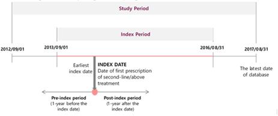
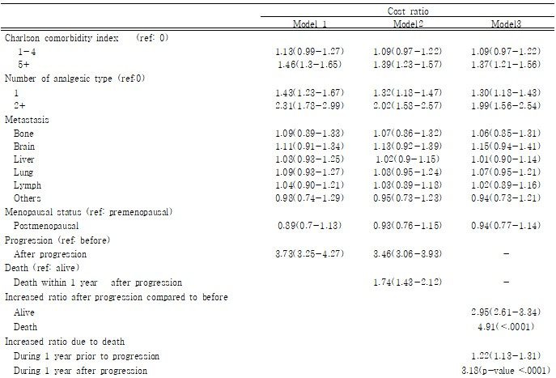
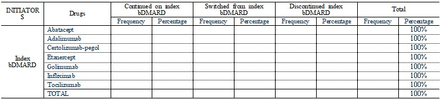
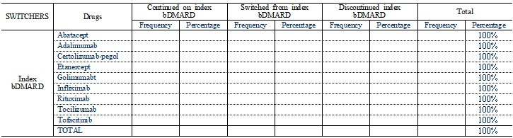
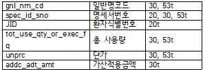
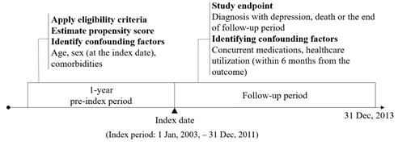
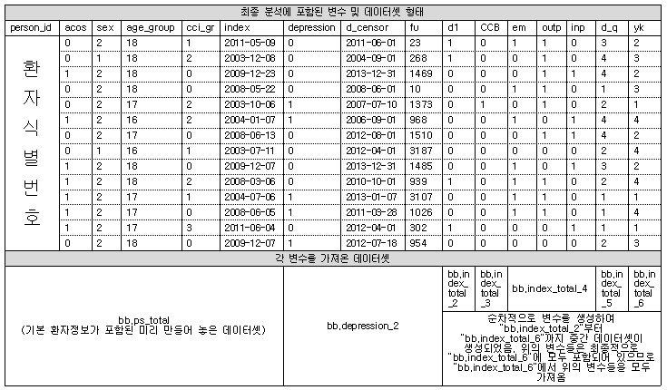
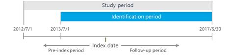
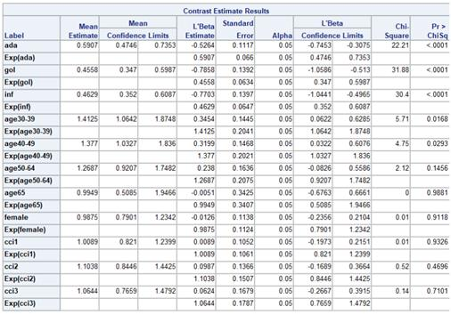
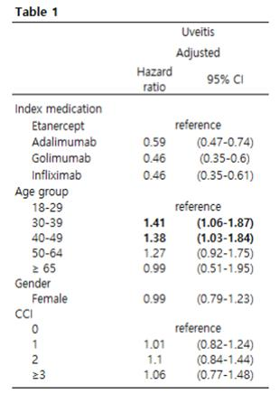

Chapter 3 분석
분석에 앞서, 연구 전반에 걸쳐, 유사 선행연구의 고찰은 필수적임 (연구디자인 인용뿐 아니라, 논문 제출 시 목표로 하는 저널 선정에 도움).
연구디자인 관련 용이한 이해를 위하여 일반적으로 활용되는 용어는 다음과 같음

[그림 3-1] 연구디자인 예시 | Study period | 연구기간으로 가용자료원의 기간으로 정의될 수 있음 |
| Index period | 연구기간 중 환자를 선정하는데 활용된 기간 |
| Index date | Index period 중 선정기준에 부합하여 선정되는 날을 일반적으로 index date로 정의하며, 이 이후부터 추적관찰이 시작됨 |
| Pre-index period | Index date 이전의 기간을 의미하며, pre-index period의 기간은 연구디자인에 따라 상이하지만 보통 1년 적용 - 해당 기간 동안 일반적으로 baseline characteristics를 추출함 |
| Post-index period 혹은 follow-up period | index date 이후의 기간으로, 환자의 추적관찰기간을 의미함 |
3.1 연구디자인 및 환자 선정
- 수록 내용
- ICD-10 코드 혹은 의약품 사용내역을 바탕, 시술 내역 등으로 환자 선정
- 환자 선정 과정 후 pre-index 기간을 설정하고 기초특성을 정의
- ICD-10 코드 혹은 의약품 사용내역을 바탕, 시술 내역 등으로 환자 선정
분석 전 고려사항
- 환자 선정 기준
- 대상질환에 따라 환자를 정의하는 방법을 잘 고찰해야함
- 아래 예시에 따라, 환자를 ICD-10코드로 정의하거나, 특정 상태에 적용되는 시술 내역 혹은 치료제 처방 내역을 적용할 수 있음
- pubmed 혹은 구글 등에서 “대상 질환 & claims database”로 선행연구 고찰하여 선정기준을 참고할 수 있음
- 대상질환에 따라 환자를 정의하는 방법을 잘 고찰해야함
- 연구 디자인 정의
- 자료원에 따라 자료원 기간이 상이하므로 이를 고려한 자료원 선정 및 index_period, pre-index period 및 follow-up period를 정의가 중요함.
- study period 내에서 최소 pre-index 기간+ index period+ 최소 follow-up 기간이 될 수 있게 고려해야 함. 간혹, index period가 특정 날짜를 포함해야 할 수 있으므로 자료원 신청 전에 확인필수 (예: 2014년 1월 1일자로 급여된 약이 포함된다면, index period가 2013년 12월 31일자로 종료되면 안됨)
- 디자인을 정의하는 과정에서 급여기준 및 정책 변동과 같은 내용도 포괄적으로 고려해야함 (예: 비용연구 혹은 사용패턴의 경우 결과에 영향을 주게 됨, 혹은 이러한 요인이 논문 주제가 될 수도 있음)
- 자료원에 따라 자료원 기간이 상이하므로 이를 고려한 자료원 선정 및 index_period, pre-index period 및 follow-up period를 정의가 중요함.
- 기초 특성 정의
- 연령, 성별, Charlson comorbidity index 등이 일반적으로 포함됨
- 대상 질환 및 특성에 따른 복용약물 및 동반질병도 구체적으로 고려해야함
- 연령, 성별, Charlson comorbidity index 등이 일반적으로 포함됨
- 상기 내용 정의 후, 분석 전 국내 임상전문가의 자문을 받는 것이 좋음
- 국내 현실에 맞지 않는 조건일 수도 있거나, 임상적 혹은 행정적으로 명확히 환자를 구분할 수 있는 구분방법이 있을 수 있음 (예: 암에서 v코드). 또한, 질병의 특성에 따라 질병코드만으로는 정의할 경우 selection bias 위험이 높은 경우도 있어, 추가 조건을 고려해야 할 수도 있음 (예: 질병코드 포함 명세건 이후 입원 혹은 외래 2회 이상). 간과 시, 재분석의 가능성을 배제할 수 없음.
- 그 외에도 결과변수를 비롯한 프로토콜 내의 정의를 모두 확인받는 것이 좋음.
- 국내 현실에 맞지 않는 조건일 수도 있거나, 임상적 혹은 행정적으로 명확히 환자를 구분할 수 있는 구분방법이 있을 수 있음 (예: 암에서 v코드). 또한, 질병의 특성에 따라 질병코드만으로는 정의할 경우 selection bias 위험이 높은 경우도 있어, 추가 조건을 고려해야 할 수도 있음 (예: 질병코드 포함 명세건 이후 입원 혹은 외래 2회 이상). 간과 시, 재분석의 가능성을 배제할 수 없음.
3.1.1 환자 선정과정 및 기초특성 추출
| 대상환자 | 진행성 유방암 환자 |
| 연구목적 | 해당 환자의 비용분석 및 의료이용 연구 |
| 연구 디자인 | -index date 선정 기준: |
| 자료원 | 건강보험심사평가원 전수데이터 |
| 환자 선정/배제 기준 | □ HR+/HER2- 유방암 환자 - 유방암: 2012.09.01~2017.08.31 기간 중 최소 2번 이상의 유방암(C50) 코드가 포함된 명세서가 있는 환자 - 호르몬수용체 양성 (HR+): 선정된 유방암 환자 중 연구기간(study period) 내에 최소 1회 이상의 내분비요법 처방이 있는 환자 - 사람상피세포성장인자수용체2 음성 (HER2-): 연구기간 내 최소 1회 이상의 HER2+ 치료제 (trastzumab, lapatinib)을 처방받은 환자 제외 □ 폐경 여부 - 폐경 전 환자:사망 전 1년 시점에서 45세 이하이거나, 사망 전 1년 동안 폐경 전 환자에게만 처방 가능한 약제(goserelin, leuprolide)를 사용한 환자 - 폐경 후 환자: 사망 전 1년 시점에서 60세 이상이거나, 사망 전 1년 동안 폐경과 관련한 질병코드인 N95가 포함된 환자 |
| 데이터셋 형태 | □ 연구 초반의 단계로, 기존 데이터베이스에 포함된 변수로 시작함 |
분석 Program
□ 질병으로 환자 정의
- 기본 제공 데이터에서 질병코드 정의
data aa.disease_index;
set rawdata.t400_2018q2_23;
if substr(SICK_CD,1,4)="AC50" then disease1=1; else disease1=0;
if substr(SICK_CD,1,4)="AC77" then disease2_1=1; else disease2_1=0;
if substr(SICK_CD,1,4)="AC78" then disease2_2=1; else disease2_2=0;
if substr(SICK_CD,1,4)="AC79" then disease2_3=1; else disease2_3=0;
if substr(SICK_CD,1,6)="AC7981" then disease2_4=1; else disease2_4=0;
if disease2_1=1 or disease2_2=1 or disease2_3=1 then disease2=1; else disease2=0;
run;- 40테이블에서 유방암환자 코드 C50이 있는 경우에 대해 disease1으로 코딩함
- 추가로, 전이성 환자에 대한 코드 C77-C79에 대해서도 명세서 단위의 자료원에서 disease2로 코딩
- 이 경우, 모든 ICD-10 코드 앞에 A가 붙는 것을 고려해야함
- 여기서 본인 연구에 활용될 질병의 코드 활용
- C50이 있는 명세서와 JID 연결
proc sql;
create table aa.disease_index2 as
select distinct MID, max(disease1) as disease1, max(disease2) as disease2, max(disease2_1) as disease2_1,
max(disease2_2) as disease2_2, max(disease2_3) as disease2_3, max(disease2_4) as disease2_4
from aa.disease_index
group by 1;
quit;
proc sql;
create table aa.BC_JID as
select distinct a.JID, b.*
from rawdata.T200_2018Q2_23 as a, aa.disease_index2 as b
where a.MID=b.MID;
quit;- 40table에서는 명세서 정보만 있기에 환자식별번호가 있는 20table의 연결이 필요함.
- 이 때, basedata.disease_index에서 명세서 단위로 각 질병코드가 있는 경우를 남긴 데이터셋을 만들어서 (max(disease1)) 20테이블의 환자식별코드(JID)와 연결
- 유방암 코드 2건 이상인 환자만 select
data aa.BC_JID_1;
set aa.bc_jid;
if disease1=1; run;
proc sql;
create table aa.BCcount as
select distinct JID, count(distinct MID) as c50_num
from aa.BC_JID_1
group by 1; quit;
data aa.BCcount_delete;
set aa.BCcount;
if c50_num<2 then delete; run;
proc sql;
select count(distinct JID)
from aa.BC_JID; quit;/*391,015*/
proc sql;
select count(distinct JID)
from aa.BC_JID
where disease1=1; quit;/*236,273*/- 해당 연구에서는 환자선정의 타당도를 높이기 위해 해당 질병코드로 처방된 청구건이 2건 이상인 환자만 선정함.
- 위의 과정에서 만들어진 basedata.bc_jid에서 유방암 코드의 명세서만 남긴 후, 좌측 코드를 통해 환자 별 유방암 명세서 개수(c50_num)를 산출한 aa.BCcount 데이터 생성
- c50_num이 2보다 작은 경우를 삭제
- sql코드는 validation을 위한 코드로, 데이터별로 포함된 환자(JID)의 수를 계산함
□ 약제 사용내역으로 환자 정의
proc sql;
create table aa.t30_0213 as
select a.MID, a.div_cd, a.cz_item_cd, a.div_ty_cd, a.amt, a.addc_adt_amt, a.tot_injc_ddcnt_exec_fq, a.gnl_cd, b.*
from rawdata.T300_2018Q2_23 as a left join druginfo_new as b
on a.gnl_cd=b.gnl_nm_cd;
quit;
proc sql;
create table aa.t60_0213 as
select a.MID, a.div_ty_cd, a.div_cd,a.amt, a.tot_injc_ddcnt_exec_fq, a.gnl_cd, b.*
from rawdata.T530_2018Q2_23 as a left join druginfo_new as b
on a.gnl_cd=b.gnl_nm_cd;
quit;
data aa.t3053;
set aa.t30_0213 aa.t60_0213; run;- druginfo_new는 연구에 필요한 약품 정보가 반영된 파일로 심평원 제공 자료에서는 단순히 일반명 코드를 바탕으로 정보가 구축되어 있어, 일반명 코드에 해당하는 정보는 druginfo_new 파일에 정리하여 매칭시켜 정리되어야 함.
따라서, 해당 파일에는 약품의 일반명 코드 (GNL_CD)가 필수적으로 포함되어야 함.
- 해당 내용에는 내가 원하는 정보를 정리함 (예: 약용량 혹은 고혈압 약의 계열과 관련된 연구일 경우, 미리 어떤 약품코드가 ACE, ARB 등에 속하는지 코딩한 내용 등을 정리)
- 예: 심평원 제공 데이터에 특정 gnl_cd가 처방되고, 해당 약제의 처방일수, 하루 처방량만 나와 있기 때문에, 해당 gnl_cd가 어떤 약제이고, 어떤 용량인지에 대한 정보는 별도로 data managing을 통해 연결해야함
- 30은 원내, 60은 약국자료이므로 두 자료에 모두 druginfo에 포함된 약품관련 정보를 연결해야함
- 자료원 초반에 30, 60을 set 하여 하나로 합치는 작업이 중요함.
- HR+/HER2- 환자 확인할 것
data aa.HR_3053;
set aa.t3053;
if (premeno=1 or AI=1 or ES_inh=1);
run;
proc sql;
create table aa.HR_3053_2 as
select a.JID, b.MID
from rawdata.T200_2018Q2_23 as a, aa.HR_3053 as b where a.MID=b.MID;
quit;- 자료원에서 HR+인 환자를 선정하기 위해서는 premeno, AI, 및 ES_inh으로 정의한 그룹의 약제 복용이 확인된 환자여야 함.
- 특정 약제의 premeno, AI 여부에 대한 정보는 druginfo_new에 정의되어야 함
- 위에서 해당 약제가 처방된 명세서(MID)만 남긴 aa.HR_3053에서, 20테이블에 명세서(MID) 정보를 바탕으로 환자 식별코드 (JID)를 붙이는 aa.HR_3053_2를 생성함.
- BC가 2개 이상인 환자 중 HR+ 약제를 사용한 환자
proc sql;
create table aa.BC_HR as
select distinct jid
from aa.BC_JID as a,
aa.HR_3053_2 as b
where a.jid=b.jid; quit;- 위에서 선정된 유방암코드가 2개인 환자(aa.BC_JID) 중 aa.HR_3053_2에서 포함된 환자를 선정
- HR에서 HER2- 뺄것
data aa.HER_3053;
set aa.t3053;
if (Her2pos=1); run;
proc sql;
create table aa.HER_3053_2 as
select a.JID, b.MID
from rawdata.T200_2018Q2_23 as a, aa.HER_3053 as b
where a.MID=b.MID; quit;
proc sort data=aa.HER_3053_2 out=aa.HER_3053_2_1 nodupkey;
by jid; run;
proc sql;
create table aa.BC_HR_HER as
select *
from aa.BC_HR
where JID not in (select JID from aa.HER_3053_2_1); quit;- 정의된 환자 중 특정 약제를 쓰지 않는 경우에 활용할 수 있는 코드임
- 위에서 해당 약제가 처방된 명세서(MID)만 남긴 aa.HER_3053에서, 20테이블에 명세서(MID) 정보를 바탕으로 환자 식별코드 (JID)를 붙이는 aa.HER_3053_2를 생성함.
- 환자 ID 당 1줄만 남도록 중복제거
@ 위에서 조건을 만족한 aa.BC_HR 자료원 중 특정 약제를 쓴 환자 정보는 제외함
□ 행위(예: 수술 등)로 환자 선정
- 30 table에 포함된 수가코드 활용
data aa.t30dz_1;
set rawdata.t300_2018q1_26;
suga=substr(div_cd,1,5);
if suga in ('R3505') then trt=1;
run;- 30table 원자료 (t300_2018q1_26)에서 수가코드를 의미하는 ‘div_cd’ 코드 활용
- 연구별 활용하는 수가코드에 따라, substr이라는 코드를 활용하여 행위 여부를 코딩할 수 있음.
□ 입.내원 기록으로 추가 정의
- 일정 조건 중 연구 디자인에 따라 병원방문기록을 추가적으로 고려하기도 함
- 해당 예시에서는 index date 이후 6개월 이내에 1회 입원 및 1회 외래방문인 경우를 선정하는 것으로 가정함
- 모든 명세서 중 index date 이후 6개월(180일 명세서만 남기기)
proc sql;
create table pt_select as
select *
from index_data
where (index_date) < recu_fr_dt <=(index_date+180); quit;
data pt_select1;
set pt_select;
if fom_tp_cd='021' then hos=1; else hos=0;
if fom_tp_cd='031' then out=1; else out=0;run;
proc sql;
create table pt_select2 as
select distinct jid, sum(hos) as hos_num, sum(out) as out_num
from pt_select1
group by jid;quit;
data pt_select3;
set pt_select2;
if (hos_num>=1 and out_num>=1);run;
proc sql;
create table pt_select4 as
select distinct jid
from pt_select3;quit;- 여기서 index data에는 앞서 선정된 환자의 index_date 정보 및 모든 명세서에 대한 요양개시일자 (recu_fr_dd를 날짜변수로 변환필요), 서식구분코드 (심평원: fom_tp_cd)가 있어야 함 (20table처럼 명세서당 1줄만 있어야 함)
- 서식구분 코드로 입원 및 외래 명세서 구분
* 특정 질병코드 및 약제 사용내용이 포함된 입원 및 외래 명세서가 필요하다면, 해당 과정 앞에 30 및 53table을 활용하여 조건에 만족하는 명세서정보를 남긴 후 좌측 코드 수행
- 환자 기준 발생한 외래 및 입원 명세서 개수 합산
- 외래 & 입원이 1회 이상인 환자만 남김
- 환자 정보만 추출
□ 기초 특성
환자 선정 이후 단계
- Table 1
data aa.data2;
set aa.data2;
format recu_fr_dt yymmdd10.;
recu_fr_dt=mdy(substr(recu_fr_dd,5,2),substr(recu_fr_dd,7,2),substr(recu_fr_dd,1,4));
run;
proc sql;
create table aa.basedata as
select *
from aa.data2
where (second_date-365) le recu_fr_dt lt second_date; quit; - 포함환자의 모든 명세서 정보 (20,30,53 table 정보 포함)가 담긴 파일(aa.data2)
# aa.data2는 활용도가 높으므로 별도의 라이브러리에 저장하는 것이 분석시 편리
- 해당 파일 중 index date (현재 second_date로 코딩) 기준으로 1년 전까지의 기록만 남김 (second_date-365<=recu_fr_dt<second_date)
- 이후 설명에서, index date 기준 1년 전 기간을 pre-index로 명명함
@ 참고) 부등호 관련 코드
| Operator | Description |
| =, eq | equals |
| ^=, <>, ne | does not equals |
| >, gt | is greater than |
| <, lt | is less than |
| >=, ge | is grreater than or equal to |
| <=, le | is less than or equal to |
- co-morbidity
proc sql;
create table aa.table1_disease as
select a.JID, a.MID, b.SICK_CD
from aa.basedata as a left join rawdata.t400_2018q2_23 as b
on a.MID=b.MID;quit;
data aa.table1_disease1;
set aa.table1_disease;
sick=substr(sick_cd,1,4);
sick5=substr(sick_cd,1,5);
sick6=substr(sick_cd,1,6);
if sick in ("AF32" "AF33") then depr=1; else depr=0;
if sick in ("AE10" "AE11" "AE12" "AE13" "AE14") then diab=1; else diab=0;
if sick in ("AF00" "AF01" "AF02" "AF03" "AG30") or sick5 in ("AF051" "AG311" "AG319") or sick6="AG3182" then demen=1; else demen=0;
if sick in ("AI10" "AI11" "AI12" "AI13" "AI14" "AI15") then hyper=1;else hyper=0;
if sick in ("AM80" "AM81") then osteo=1; else osteo=0;
if sick="AD64" then anemia=1; else anemia=0; run;
proc sql;
create table aa.table1_disease2 as
select distinct JID, max(anemia) as anemia, max(depr) as depr, max(diab) as diab, max(osteo) as osteo, max(hyper) as hyper, max(demen) as demen
from aa.table1_disease1
group by 1; quit;- 환자의 basedata에 상병코드를 명세서 번호를 기준으로 40table과 연결함
- 질환에 따라 정의될 수 있는 ICD-10코드 길이가 상이하므로 길이별 코드를 생성함
- 현재 예시는 우울증, 당뇨, 치매, 고혈압, 골다공증, 빈혈
*차후 개별 연구에 활용시 sick, sick5, sick6을 모두 활용한 치매(dement) 코드 참고 권장
- 해당 기간 동안 각 질병여부를 확인하기 위하여 max 코드를 활용하였으며, 환자단위 (group by 1←select distinct 구문 이후 변수 중 첫 번째인 JID를 의미)로 구분하도록 정의함
- CCI 정의
%macro cci(a);
proc sql;
create table cci as
select JID,
/*심근경색*/
(case when substr(left(sick_cd),2,3) in ('I21', 'I22') then 1
when substr(left(sick_cd),2,4) in ('I252') then 1 else 0 end ) as DI1,
/* 울혈성 심부전 */
(case when substr(left(sick_cd),2,3) in ('I43', 'I50') then 1
when substr(left(sick_cd),2,4) in ('I099', 'I110', 'I130', 'I132', 'I255', 'I420', 'I425', 'I426', 'I427', 'I428', 'I429', 'P290') then 1 else 0 end ) as DI2,
/* 말초혈관질환 */
(case when substr(left(sick_cd),2,3) in ('I70', 'I71') then 1
when substr(left(sick_cd),2,4) in ('I731', 'I738', 'I739', 'I771', 'I790', 'I792', 'K551', 'K558', 'K559', 'Z958', 'Z959') then 1 else 0 end ) as DI3,
/* 뇌혈관질환 */
(case when substr(left(sick_cd),2,3) in ('G45', 'G46', 'I60', 'I61', 'I62', 'I63', 'I64', 'I65', 'I66', 'I67', 'I68', 'I69') then 1
when substr(left(sick_cd),2,4) in ('H340') then 1 else 0 end ) as DI4,
/* 치매 */
(case when substr(left(sick_cd),2,3) in ('F00', 'F01', 'F02', 'F03', 'G30') then 1
when substr(left(sick_cd),2,4) in ('F051', 'G311') then 1 else 0 end ) as DI5,
/* 만성폐질환 */
(case when substr(left(sick_cd),2,3) in ('J40', 'J41', 'J42', 'J43', 'J44', 'J45', 'J46', 'J47', 'J60', 'J61', 'J62', 'J63', 'J64', 'J65', 'J66', 'J67') then 1
when substr(left(sick_cd),2,4) in ('I278', 'I279', 'J684', 'J701', 'J703') then 1 else 0 end ) as DI6,
/* 결합조직질환 */
(case when substr(left(sick_cd),2,3) in ('M05', 'M06', 'M32', 'M33', 'M34') then 1
when substr(left(sick_cd),2,4) in ('M315', 'M351', 'M353', 'M360') then 1 else 0 end ) as DI7,
/* 소화궤양 */
(case when substr(left(sick_cd),2,3) in ('K25', 'K26', 'K27', 'K28') then 1 else 0 end ) as DI8,
/* 경증 간질환 */
(case when substr(left(sick_cd),2,3) in ('B18', 'K73', 'K74') then 1
when substr(left(sick_cd),2,4) in ('K700', 'K701', 'K702', 'K703', 'K709', 'K713', 'K714', 'K715', 'K717','K760', 'K762', 'K763', 'K764', 'K768', 'K769', 'Z944') then 1 else 0 end ) as DI9,
/* 합병증이 없는 당뇨병 */
(case when substr(left(sick_cd),2,3) in ('E10', 'E11', 'E12', 'E13', 'E14') then 1
when substr(left(sick_cd),2,4) in ('E100', 'E101', 'E106', 'E108', 'E109', 'E110', 'E111', 'E116', 'E118', 'E119', 'E120', 'E121', 'E126', 'E128', 'E129', 'E130', 'E131', 'E136', 'E138', 'E139', 'E140', 'E141', 'E146', 'E148', 'E149') then 1 else 0 end ) as DI10,
/* 합병증 동반 당뇨병 */
(case when substr(left(sick_cd),2,4) in ('E102', 'E103', 'E104', 'E105', 'E107', 'E112', 'E113', 'E114', 'E115', 'E117', 'E122', 'E123', 'E124', 'E125', 'E127', 'E132', 'E133', 'E134', 'E135', 'E137', 'E142', 'E143', 'E144', 'E145', 'E147') then 1 else 0 end ) as DI11,
/* 반신마비 */
(case when substr(left(sick_cd),2,3) in ('G81', 'G82') then 1
when substr(left(sick_cd),2,4) in ('G041', 'G114', 'G801', 'G802', 'G830', 'G831', 'G832', 'G833', 'G834', 'G839') then 1 else 0 end ) as DI12,
/* 신장질환 */
(case when substr(left(sick_cd),2,3) in ('N18', 'N19') then 1
when substr(left(sick_cd),2,4) in ('I120', 'I131', 'N032', 'N033', 'N034', 'N035', 'N036', 'N037', 'N052', 'N053', 'N054', 'N055', 'N056', 'N057', 'N250', 'Z490', 'Z491', 'Z492', 'Z940', 'Z992') then 1 else 0 end ) as DI13,
/* 암 exp BC */
(case when substr(left(sick_cd),2,3) in ('C00', 'C01', 'C02', 'C03', 'C04', 'C05', 'C06', 'C07', 'C08', 'C09', 'C10', 'C11', 'C12', 'C13', 'C14', 'C15', 'C16', 'C17', 'C18', 'C19', 'C20', 'C21', 'C22', 'C23', 'C24', 'C25', 'C26', 'C30', 'C31', 'C32', 'C33', 'C34', 'C37', 'C38', 'C39', 'C40', 'C41', 'C43', 'C45', 'C46', 'C47','C48','C49', 'C51','C52', 'C53', 'C54', 'C55', 'C56', 'C57', 'C58', 'C60', 'C61', 'C62', 'C63', 'C64', 'C65', 'C66', 'C67', 'C68', 'C69', 'C70', 'C71', 'C72', 'C73', 'C74', 'C75', 'C76', 'C81', 'C82', 'C83', 'C84', 'C85', 'C88', 'C90', 'C91', 'C92', 'C93', 'C94', 'C95', 'C96', 'C97') then 1 else 0 end ) as DI14,
/* 간질환 */
(case when substr(left(sick_cd),2,4) in ('I850', 'I859', 'I864', 'I982', 'K704', 'K711', 'K721', 'K729', 'K765', 'K766', 'K767') then 1 else 0 end ) as DI15,
/* 전이성 고형암 */
(case when substr(left(sick_cd),2,3) in ('C77', 'C78', 'C79', 'C80') then 1 else 0 end ) as DI16,
/* 후천성면역결핍즏 */
(case when substr(left(sick_cd),2,3) in ('B20', 'B21', 'B22', 'B24') then 1 else 0 end ) as DI17
from &a;
create table cci2 as
select distinct JID,
max(DI1) as DI1,
max(DI2) as DI2,
max(DI3) as DI3,
max(DI4) as DI4,
max(DI5) as DI5,
max(DI6) as DI6,
max(DI7) as DI7,
max(DI8) as DI8,
max(DI9) as DI9,
max(DI10) as DI10,
max(DI11) as DI11,
max(DI12) as DI12,
max(DI13) as DI13,
max(DI14) as DI14,
max(DI15) as DI15,
max(DI16) as DI16,
max(DI17) as DI17
from cci
group by JID;
quit;
data aa.cci2; /*생성된 cci 데이터*/
set cci2;
cci=(DI1+DI2+DI3+DI4+DI5+DI6+DI7+DI8+DI9+DI10)*1+(DI11+DI12+DI13+DI14)*2+(DI15)*3+(DI16+DI17)*6;
keep JID cci;
run;
%mend cci;
%cci( aa.table1_disease );- 이미 확인된 매크로 코드이므로, 좌측 코드를 그대로 활용하면 됨. 해당 코드는 업데이트 된 CCI 가중치를 활용한 것임
- 다만, 코드 하단의 다음 밑줄 친 2부분을 수정해 주어야 함.
data aa.cci2; /*생성된 cci 데이터*/
set cci2;
cci=(DI1+DI2+DI3+DI4+DI5+DI6+DI7+DI8+DI9+DI10)*1+(DI11+DI12+DI13+DI14)*2+(DI15)*3+(DI16+DI17)*6;
keep JID cci;
run;
%mend cci;
%cci(aa.table1_disease); /*pre-index 자료*/- “aa.table1_disease”에 담긴 정보를 기반으로 cci가 계산되므로 해당 자료원에는 환자식별정보 (JID), 상병코드(sick_cd)가 필수로 있어야함.
좌측 자료원에서는 pre-index 기간의 모든 명세서정보이므로, 명세서정보 (MID)도 포함됨
- co-medication 추가
data aa.table1_comedi;
set aa.basedata;
if gnl_cd in ("359001ATR" "359002ATB" "359002ATR" "359002BIJ" "359003ATR" "359003BIJ" "359004ATB" "359007ATR" "359008ATR" "359030BIJ" "359031BIJ" "359032BIJ" "380500ATB" "440600ACH" "517100ATR" "564000ATR" "564100ATR" "359005ATB" "359006ATB") then oxycodon=1; else oxycodon=0;
if gnl_cd in ("197201BIJ" "197202BIJ" "197230BIJ" "197231BIJ" "197301ACR" "197301ATR" "197301BIJ" "197302ACR" "197302ATR" "197302BIJ" "197303BIJ" "197303CSP" "197304BIJ" "197305ATB" "197305BIJ" "197306BIJ" "197307BIJ" "197308BIJ" "197311BIJ" "197330BIJ" "197331BIJ" "197332BIJ" "197333BIJ" "197334BIJ" "197335BIJ" "197336BIJ" "197337BIJ" "197338BIJ" "197339BIJ" "197340BIJ" "197301ATB" "197301CSP" "197302CSP" "197304CSP") then morphine=1;else morphine=0;
run;
proc sql;
create table aa.table1_comedi1 as
select distinct jid, max(oxycodon) as oxycodon, max(morphine) as morphine, max(codeine) as codeine, max(fentanyl) as fentanyl
from aa.table1_comedi
group by jid; quit;- 환자의 pre-index 기간에 사용한 약물 정보를 추출함.
현재 예시에서는 oxycodon 및 morphine을 활용함
-pre-index 기간동안의 복용여부가 필요하므로 환자정보를 기준으로 복용여부를 남김
- 생성된 기초특성 자료 합치기
proc sort data=aa.basedata out=aa.table1_final nodupkey;
by jid index_age;run;
proc sql;
create table aa.table1_final1 as
select distinct a.JID, a.index_age, b.anemia, b.depr, b.diab, b.demen, b.hyper, b.osteo,
c.cci,
d.oxycodon,d.morphine
from aa.table1_final as a left join aa.table1_disease2 as b on a.JID=b.JID
left join aa.cci2 as c on a.JID=c.JID
left join aa.table1_comedi2 as d on a.JID=d.JID; quit;
data aa.table1_final2 ;
set aa.table1_final1 ;
if cci=0 then cci_group=1;
else if cci>4 then cci_group=3;
else cci_group=2;
run;
proc contents data=aa.table1_final2;
run;
proc freq data=aa.table1_final2;
table (cci_group anemia depr diab demen hyper osteo oxycodon morphine)/cmh; run;- 환자들의 index_date 시점의 연령(pat_age)를 index_age로 정의하였기에 aa.basedata를 기준으로 환자 당 1줄만 남길 수 있게 nodupkey를 적용하여 정렬
* age 및 성별은 20table에 있음
- 환자 별로 생성된 테이터를 left join함
- cci_group 코딩
- 하단의 빈도분석 코딩 수행을 위해 proc contents를 통해 포함된 변수명 확인
- 포함 변수에 대한 빈도분석 수행시 cmh; 조건문을 통해 빈도 분석의 통계적 유의미성을 확인할 수 있음
- 특정 그룹 제외 분석시
proc freq data=aa.table1_final2;
table (anemia depr diab demen hyper osteo oxycodon morphine)/cmh;
where cci_group^=0 ; run;
proc means data=aa.table1_final2;
var index_age cci; run;- 아래 where 구문에서 ^=0 을 입력하면, cci_group 중 0에 해당하는 그룹은 제외하고 분석됨.
* 특정 조건에 해당하는 분석시, ‘=’ 사용
- 평균은 proc means를 사용
- 그룹별 평균 분석 (예: 성별)
proc means data=aa.table1_final2;
var index_age;
class sex; run;- 그룹별 분석시 ‘class’ 문을 활용함
표 4 기초특성 분석표 예시
| Variables | Overall Population(n=2,208) |
|---|---|
| Age, mean ± SD | 55.0 ±10.3 |
| CCI (mean ± SD) | 6.3±3.1 |
| CCI group,n(%) | 2,208(100.0) |
| 0 | 160(7.3) |
| 1-3 | 311(14.1) |
| 4+ | 1737(78.7) |
| Comorbidities,n(%)§ | 2,207(100.0) |
| Depression | 304(13.8) |
| Diabetes | 414(18.8) |
| Dementia | 38(1.7) |
| Hypertension | 624(28.3) |
| Osteoporosis | 781(35.4) |
| Analgesics, n(%)§ | 2,207(100.0) |
| Oxycodone | 543(24.6) |
| Morphine | 239(10.8) |
| § One patient had missing data. |
3.2 비용 및 의료자원 이용
- 수록 내용: 의료비용 및 의료자원 이용에 대해 입원/ 외래별 10대분류로 분류하여 산출
- 분석 전 고려사항
□ 원외처방에 대한 약품비용 계산 관련
- 심평원의 병원자료 53테이블과 약국 30테이블은 기본적으로 같은 내용을 담고있으나, 포함내용이 상이할 수 있음 (하단 표 참고)
| 병원 53 테이블 | 약국 30 테이블 | |
|---|---|---|
| 의사의 처방 내역 | O⑴ | X |
| 실제 조제 내역 | X | O⑴ |
| 약국 조제료 | X | O |
⑴ 일반적으로는 두 내역이 동일하나, 실제 조제 내역이 다를 경우도 있음
-두 자료원을 동시에 신청할 경우 중복된 자료원이 제공되므로, 실제 처방 & 조제내역의 비교 혹은 실제 의약품 처방행태 등을 확인하는 목적을 제외하면 일반적으로 원외처방 내역은 병원 53테이블을 신청.
□ 총액과 subtotal 계산 관련
- 심평원의 30테이블의 경우, 심사 결정된 건이 모두 누적되어 있으나 지급구분변수 상 지급된 자료원이 추출되었을 가능성이 높음. 따라서, 제공되는 데이터는 심사 결정된 건으로 추정됨
- 그럼에도 불구하고, 경우에 따라 명세서 단위 총액(20테이블의 심사결정금액)과 해당 명세서 내의 행위별 단가의 합(30테이블의 항목별 비용 합)이 다르므로, 연구에서 항목별 비용을 세분화하여 산출시 총액을 20테이블로 할 경우 합이 다를 수 있음. (원인은 심평원에 문의 중)
- 질병 중 포괄수가제 적용되는 경우는 이 때 수행된 구체적인 행위 확인이 불가함. 따라서 연구의 대상 질환의 특성 확인 필요
□ 입원 비용 산출 과정에서 주의 사항★
- 입원 명세서의 경우, 병원에서 비용 청구를 위해 실제로 퇴원이 아님에도 불구하고 퇴원처리 후 즉시 입원하는 행정절차를 수행하기도 함. 따라서 이러한 경우가 제대로 반영되지 않으면, 환자의 입원횟수는 과대추정 입원기간은 과소추정될 수 있음 (아래 예시 참고)
| JJD | recu_fr_dd | recu_to_dd | lag_hos_off | gap_epi | 입원 기간 |
|---|---|---|---|---|---|
| 1 | 2012-01-01 | 2012-01-14 | . | . | 14 |
| 1 | 2012-01-15 | 2012-01-20 | 2012-01-14 | 1 | 6 |
| 1 | 2012-01-31 | 2012-02-13 | 2012-01-20 | 11 | 14 |
| ↓ | |||||
| JJD | recu_fr_dd | recu_to_dd | lag_hos_off | gap_epi | |
| 1 | 2012-01-01 | 2012-01-20 | . | . | 20 |
| 1 | 2012-01-31 | 2012-02-13 | 2012-01-20 | 11 | 14 |
□ 질병 특이적인 비용 산출시
- 명세서에 따라, 질병코드만으로 정의할 경우 대상 질병의 명세서가 누락될 수 있음 (실제로 유방암 환자의 비용연구에서, 명세서 상의 유방암 ICD-10 코드가 없었음에도 tamoxifen이라는 유방암 치료 약물이 처방된 경우가 있음). 따라서 질병 특이적인 비용을 산출하기 위해 명세서를 정의하는 과정은 임상전문가의 자문을 받는 것이 좋음.
□ 응급실 방문 비용
- 응급실 방문비용은 명세서 중 수가코드 중 응급실 방문 관련 코드(AC101, AC103, AC105)가 포함되었거나, 응급의학과 코드(dsbit_cd=’24’)가 포함된 건을 이용함.
- 여기에서 입원 환자 중 응급실을 경유한 입원에 대한 명세서도 응급방문 정의시 고려될 수 있음. 하지만 이 경우 이로 인한 입원비용이 반영되어, 해당 조건 여부에 따라 결과의 편차가 크므로 연구에 따라 포함여부의 결정이 필요함.
3.2.1 비용 산출
- 대상 환자는 위의 환자선정에 포함된 환자이며, 해당 환자의 입원/외래 별 비용에 대하여 10대 분류 별 분석을 수행함 (아래 코드 참고)
<표 > 10대 분류를 위한 참고 표 (심평원 기준)
| 코드명 | 정의 |
|---|---|
| CZ_ITEM_CD | 명세서항별목코드 (항코드+목코드:각 항코드마다 목코드 분류가 있어 항코드 와 목코드를 조합하여 진료내역의 일반적 특성을 파악할 수 있음) |
| 항코드 | 목코드 |
| 01:진찰료 | (01:초진,02:재진,03:응급및회송료등) |
| 02:입원료 | (01:일반,02:내과,정신과,만8세미만의소아,03: 중환자실,04:격리병실,10:기본식대,11:가산식 대,99:기타입원료) |
| 03:투약료 | (01:내복약,02:외용약,03:처방전) |
| 04:주사료 | (01:주사,99:기타) |
| 05:마취료 | (01:마취) |
| 06:이학요법료 | (01:이학요법료) |
| 07:정신요법료 | (01:정신요법료) |
| 08:처치 및 수술료 | (01:처치및수술,(치과)보통처치외처치항목,02:(치과)절개외수술항목03:캐스트,99:치과기타) |
| 09:검사료 | (01:자체검사,02:위탁검사) |
| 10:영상진단 및 방사선치료료 | (01:진단, 02:치료) |
| L: 요양병원정액 | (01:요양병원정액수가) |
| S: 특수장비 | (01:CT진단,02:MRI진단,03:PET진단) |
| V:보훈 등100/100본인부담 | (01:의약품,02:치료재료,03:진료행위) |
| W:비급여(*한방 경우는 다름) | (01:의약품,02:치료재료,03:진료행위) |
| X:정신과 정액 | (01:의료급여 정신질환 정액수가(외래,낮병 동,입원,외박수가), 02:투약 1일당 정액수가) |
- 분석 program
data aaa.pre_index_cost1;
set aaa.pre_index1;
if cz_item_cd="" then cz_item_cd='9999';
if cz_item_cd='9999' then addc_adt_amt=amt;
item=substr(cz_item_cd,1,2);
item2=substr(cz_item_cd,1,4);
item3=substr(div_cd,1,3);
if (item in ('03' '04' '99') and div_ty_cd='3') then cost_1=1; else cost_1=0; *약품비;
if (cost_1=1 and treatmedi=1) then cost_1_txt=1; else cost_1_txt=0; *치료약품비;
if (item in ('03' '04' '99') and div_ty_cd^='3') then cost_2=1; else cost_2=0; *투약주사료;
if item3 in ('AA1' 'AA2') then cost_3=1; else cost_3=0; *진찰료;
if item='09' then cost_4=1; else cost_4=0; *검사료;
if item='02' then cost_5=1; else cost_5=0; *입원료;
if item='08' then cost_6=1; else cost_6=0; *처치 및 수술료;
if item in ('10' 'SS') then cost_7=1; else cost_7=0; *영상진단 및 방사선;
if (cost_1=0 and cost_2=0 and cost_3=0 and cost_4=0 and cost_5=0 and cost_6=0 and cost_7=0) then cost_8=1; else cost_8=0; *others;
run;
proc sort data=aaa.pre_index_cost1;
by jid recu_fr_Dt;
run;- aaa.pre_index1에 포함된 자료는 대상 환자의 원하는 연구기간 동안의 모든 명세서에 대해 30 및 53table의 정보가 담긴 dataset
- 10대 분류로 분리하기 위한 과정이며, 이 부분은 연구에 따라 카테고리가 변동될 수 있음
data aaa.pre_index_cost2;
set aaa.pre_index_cost1;
cost_11=cost_1*ADDC_ADT_AMT;
cost_22=cost_2*ADDC_ADT_AMT;
cost_33=cost_3*ADDC_ADT_AMT;
cost_44=cost_4*ADDC_ADT_AMT;
cost_55=cost_5*ADDC_ADT_AMT;
cost_66=cost_6*ADDC_ADT_AMT;
cost_77=cost_7*ADDC_ADT_AMT;
cost_88=cost_8*ADDC_ADT_AMT;
cost_tx=cost_1_txt*ADDC_ADT_AMT;
cost_txother=(cost_1-cost_1_txt)*ADDC_ADT_AMT;
run;- 10대 분류 카테고리 별 비용을 산출하기 위한 과정
proc sql;
create table aaa.pre_index_cost3 as
select *, sum(addc_adt_amt) as t30_amt_mid, max(cost_1) as med_mid, max(cost_2) as admmed_mid, max(cost_3) as jin_mid, max(cost_4) as gumsa_mid,
max(cost_5) as hos_mid, max(cost_6) as sur_mid, max(cost_7) as image_mid
from aaa.pre_index_cost2
group by MID;
quit;
proc sort data=aaa.pre_index_cost3;
by jid recu_fr_dt;
run;- 명세서 단위의 총액 및 10대 분류 여부 코딩 (예: 특정 명세서에 약품 처방내역이 있을 경우 med_mid=1로 코딩됨)
proc sql;
create table aaa.pre_index_cost4 as
select distinct *, sum(cost_11) as cost_med, sum(cost_22) as cost_admmed, sum(cost_33) as cost_jin, sum(cost_44) as cost_gumsa,
sum(cost_55) as cost_hos, sum(cost_66) as cost_sur, sum(cost_77) as cost_image, sum(cost_88) as cost_other, sum(cost_tx) as cost_tx_med, sum(cost_txother) as cost_other_med,
sum(cost_1) as num_med, sum(cost_2) as num_admmed, sum(cost_3) as num_jin, sum(cost_4) as num_gumsa, sum(cost_5) as num_hos, sum(cost_6) as num_sur, sum(cost_7) as num_image, sum(cost_1_txt) as num_tx
from aaa.pre_index_cost3
group by JID;
quit;- 환자 단위로 카테고리 별 비용 및 총 수행횟수 합산
data aaa.pre_index_cost5;
set aaa.pre_index_cost4;
fw_month=dur1/30.42;
run;
/*
if rvd_rpe_tamt_amt='.' then rvd_rpe_tamt_amt='0';
if rvd_p100lt_tot_amt='.' then rvd_p100lt_tot_amt='0';
sg_amt_mid=rvd_rpe_tamt_amt+rvd_p100lt_tot_amt;
*/
proc sort data=aaa.pre_index_cost5 out=aaa.pre_index_cost6 nodupkey;
by jid recu_fr_dt mid;
run;- 환자 별로 follow up 기간이 다를 것을 고려하여, 월 단위의 fw 기간으로 전환 (dur1=환자의 f/u 기간(days))
- 총액에 대해 심결요양비용으로 보고싶을 경우는 좌측 코딩을 활용할 수 있음. 다만 sg_amt_mid와 30table로 쪼개진 addc_adt_amt의 합이 맞지 않아서 10대 분류로 쪼개서 볼 경우 addc_adt_Amt로만 산출하였음.
- 명세서 단위로 산출되었으므로 중복제거
data aaa.pre_index_cost7;
set aaa.pre_index_cost6;
keep JID mid death t30_amt_mid med_mid admmed_mid jin_mid gumsa_mid hos_mid sur_mid image_mid fw_cost cost_med cost_admmed cost_jin cost_gumsa cost_hos cost_sur cost_image cost_emer cost_tx_med cost_other_med num_med num_admmed num_jin num_gumsa num_hos num_sur num_image cost_other num_tx fw_month max_amt_mid post fw_month_post fw_month_pre;
run;
/*MID=509,353*/
proc sql;
create table aaa.pre_index_cost7_1 as
select distinct *, count(mid) as tot_visit, sum(t30_amt_mid) as tot_amt_jid_t30, sum(med_mid) as num2_med, sum(admmed_mid) as num2_admmed, sum(jin_mid) as num2_jin,
sum(gumsa_mid) as num2_gumsa, sum(hos_mid) as num2_hos, sum(sur_mid) as num2_sur, sum(image_mid) as num2_image
from aaa.pre_index_cost7
group by JID;
quit;
proc sort data=aaa.pre_index_cost7_1 out=aaa.pre_index_cost8 nodupkey;
by JID;
run;- 환자 단위로 특정기간 동안 발생한 모든 방문, 비용 총액 (tot_amt_jid_t30), 카테고리별 발생되었던 명세서 수 산출
data aaa.pre_index_cost8;
set aaa.pre_index_cost8;
aver_totamt=tot_amt_jid_t30/fw_month;
aver_visit=tot_visit/fw_month;
aver_med=cost_med/fw_month;
aver_tx_med=cost_tx_med/fw_month;
aver_other_med=cost_other_med/fw_month;
aver_admmed=cost_admmed/fw_month;
aver_jin=cost_jin/fw_month;
aver_gumsa=cost_gumsa/fw_month;
aver_hos=cost_hos/fw_month;
aver_sur=cost_sur/fw_month;
aver_image=cost_image/fw_month;
aver_other=cost_other/fw_month;
run;- 환자당 평균 월별 비용을 산출하기 위해 산출된 총액을 환자별 f/u 기간(월로 산출)으로 나눈 변수 생성
proc means data=aaa.pre_index_cost8 mean std median max;
var tot_amt_jid_t30 fw_month aver_totamt aver_visit ;
run;- 해당 연구기간에서는 총 1년간 의료비용을 정리하였으므로 포함된 환자의 다음 정보의 평균 산출
- 연간 의료비 (tot_amt_jid_t30)
- 추적 관찰 기간(fw_month)
- 월평균 의료비 (aver_totamt)
- 평균 의료기관 방문 횟수(aver_visit)
- hospitalization
data aaa.pre_hos;
set aaa.pre_index_cost5;
if fom_tp_cd='021';
run;- 명세서 단위로 정리된 pre_index_cost5 중 외과입원에 대한 명세서(021)만 남김
- episode 정의
- 입원의 경우 월별 정산 등의 사유로 1번의 episode에 해당하는 입원임에도 불구하고 분할 청구 될 수 있음. 이럴 경우 입원횟수의 과대추정 및 평균 입원 기간이 과소 추정 될 수 있으므로 계산 필요
(아래 예시 참고)
| JJD | recu_fr_dd | recu_to_dd | lag_hos_off | gap_epi | 입원 기간 |
|---|---|---|---|---|---|
| 1 | 2012-01-01 | 2012-01-14 | . | . | 14 |
| 1 | 2012-01-15 | 2012-01-20 | 2012-01-14 | 1 | 6 |
| 1 | 2012-01-31 | 2012-02-13 | 2012-01-20 | 11 | 14 |
| ↓ | |||||
| JJD | recu_fr_dd | recu_to_dd | lag_hos_off | gap_epi | |
| 1 | 2012-01-01 | 2012-01-20 | . | . | 20 |
| 1 | 2012-01-31 | 2012-02-13 | 2012-01-20 | 11 | 14 |
proc sort data=aaa.pre_hos out=cost_hos_epi nodupkey;
by JID recu_fr_dt MID;
run;
data cost_hos_epi;
set cost_hos_epi;
format recu_to_dt yymmdd10.;
recu_to_dt=recu_fr_dt+vst_ddcnt-1;
run;
proc sort data=cost_hos_epi;
by JID recu_fr_dt;
run;- 요양개시일자(입원일자)로부터 퇴원일자를 산출
data cost_hos_epi1;
set cost_hos_epi;
by JID;
lag_hos_off=lag(recu_to_dt);
if first.JID then lag_hos_off='.';
gap_epi=recu_fr_dt-lag_hos_off;
run;
data cost_hos_epi2;
set cost_hos_epi1;
format lag_hos_off yymmdd10.;
keep jid mid vst_ddcnt recu_fr_dt recu_to_dt gap_epi lag_hos_off;run;
data cost_hos_epi3;
set cost_hos_epi2;
format lag_recufr yymmdd10.;
lag_recufr=lag(recu_fr_dt);
if gap_epi<=1 then flag=0;
else if gap_epi>=2 then flag=1;
if lag_hos_off='.' then flag='.';
run;
proc sort data=cost_hos_epi3;
by JID recu_fr_dt;
run;- 환자 단위로 입원 일자를 한줄 씩 내린 후, 다음 입원 시작일자와의 차이를 산출함
(상기 그림 예시 참고)
- gap_epi가 1일 경우, flag=0으로 코딩
data cost_hos_epi4;
set cost_hos_epi3;
by JID;
retain hos_num 0;
if first.JID then hos_num=1;
else hos_num+flag;
drop lag_hos_off;
run;- hos_num이라는 입원횟수에 대한 변수 생성하여, 새로 counting
proc sql;
create table cost_hos_epi5 as
select *, sum(vst_ddcnt) as hos_dur
from cost_hos_epi4
group by JID, hos_num;
quit;- hos_num에 따른 입원 기간(hos_dur) 산출
- episode 정보 붙이기
proc sql;
create table aaa.pre_hos1 as
select distinct a.*, b.hos_num, b.hos_dur
from aaa.pre_hos as a left join cost_hos_epi5 as b
on a.MID=b.MID;
quit;- 입원 관련 명세서 정보가 담긴 data에 hos_num 및 hos_dur 정보 연결
data aaa.pre_hos1_1;
set aaa.pre_hos1;
drop t30_amt_mid--sg_amt_mid;
run;
proc sort data=aaa.pre_hos1_1;
by jid recu_fr_Dt hos_num;
run;- 불필요한 변수를 제거하는 과정이므로 해당 코드는 불필요할 수 있음
proc sql;
create table aaa.pre_hos1_2 as
select *, max(cost_1) as med_mid, max(cost_2) as admmed_mid, max(cost_3) as jin_mid, max(cost_4) as gumsa_mid,
max(cost_5) as hos_mid, max(cost_6) as sur_mid, max(cost_7) as image_mid
from aaa.pre_hos1_1
group by jid, hos_num;
quit;
proc sort data=aaa.pre_hos1_2;
by jid recu_fr_dt;
run;- 환자별 입원 당, 카테고리별 비용발생 여부
proc sql;
create table aaa.pre_hos2 as
select *, sum(addc_adt_amt) as t30_amt, sum(cost_11) as cost_med_hos, sum(cost_22) as cost_admmed_hos, sum(cost_33) as cost_jin_hos,
sum(cost_44) as cost_gumsa_hos, sum(cost_55) as cost_hos_hos, sum(cost_66) as cost_sur_hos, sum(cost_77) as cost_image_hos,
sum(cost_88) as cost_other_hos, sum(cost_tx) as cost_tx_med_hos, sum(cost_txother) as cost_other_med_hos,
from aaa.pre_hos1_2
group by JID; quit;
proc sort data=aaa.pre_hos2 out=aaa.pre_hos3 nodupkey;
by jid recu_fr_dt mid;
run;환자 당 발생한
- 입원비 총액(t30_amt)
- 입원 중 약품비(cost_med_hos)이 때, 치료제로 인한 약품비, 그 외 약품비용도 별고 산출 (cost_tx_med_hos, cost_other_med_hos)
- 입원 중 약품 투약비(cost_admmed_hos)
- 입원 중 진찰료 (cost_jin_hos)
- 입원 중 검사료 (cost_gumsa)hos)
- 입원 비용(cost_hos_hos)
- 입원 중 수술료 (cost_sur_hos)
- 입원 중 영상 진단 및 방사선 (cost_image_hos)
- 기타 입원 관련 비용 (cost_other)
proc sql;
create table aaa.pre_hos4 as
select distinct *, max(hos_num) as hos_num_jid
from aaa.pre_hos3
group by JID;
quit;
proc sort data=aaa.pre_hos4 out=aaa.pre_hos5 nodupkey;
by JID;
run;- 환자 당 1년 간 총 입원기간(hos_dur2), 총 입원횟수(hos_num_jid) 생성
data aaa.pre_hos6;
set aaa.pre_hos5;
freq_hos=hos_num_jid/fw_month;
aver_hos=t30_amt/fw_month;
aver_hos_epi=t30_amt/hos_num_jid;
aver_hos_med=cost_med_hos/fw_month;
aver_hos_admmed=cost_admmed_hos/fw_month;
aver_hos_jin=cost_jin_hos/fw_month;
aver_hos_gumsa= cost_gumsa_hos/fw_month;
aver_hos_hos=cost_hos_hos/fw_month;
aver_hos_sur=cost_sur_hos/fw_month;
aver_hos_image=cost_image_hos/fw_month;
aver_hos_other=cost_other_hos/fw_month;
aver_hos_tx=cost_tx_med_hos/fw_month;
aver_hos_txother=cost_other_med_hos/fw_month;
aver_hos_jin2=cost_jin_hos/hos_num_jid;
run;
proc means data=aaa.pre_hos6;
var freq_hos hos_dur_epi aver_hos_jin2;
run; - 월별 평균 방문횟수, 입원 비용, episode 당 입원 비용 등 산출
- 외래
data aaa.pre_out;
set aaa.pre_index_cost5;
if fom_tp_cd='031';
run;
proc sql;
create table aaa.pre_out2 as
select *, sum(cost_11) as cost_med_out, sum(cost_22) as cost_admmed_out, sum(cost_33) as cost_jin_out,
sum(cost_44) as cost_gumsa_out, sum(cost_55) as cost_hos_out, sum(cost_66) as cost_sur_out, sum(cost_77) as cost_image_out,
sum(cost_88) as cost_other_out, sum(cost_tx) as cost_tx_med_out, sum(cost_txother) as cost_other_med_out,
sum(cost_1) as num_med_out, sum(cost_2) as num_admmed_out, sum(cost_3) as num_jin_out,
sum(cost_4) as num_gumsa_out, sum(cost_5) as num_hos_out, sum(cost_6) as num_sur_out, sum(cost_7) as num_image_out,
sum(cost_1_txt) as num_tx_out
from aaa.pre_out
group by JID;
quit;
proc sort data=aaa.pre_out2 out=aaa.pre_out3 nodupkey;
by jid recu_fr_dt mid ;
run;data aaa.pre_out3;
set aaa.pre_out3;
max_amt_mid=max(sg_amt_mid, t30_amt_mid);
keep JID mid insup_tp_cd death new_death group_meno t30_amt_mid
med_mid admmed_mid jin_mid gumsa_mid hos_mid sur_mid image_mid
cost_med_out cost_admmed_out cost_jin_out cost_gumsa_out cost_hos_out cost_sur_out
cost_image_out cost_other_out cost_tx_med_out cost_other_med_out
num_med_out num_admmed_out num_jin_out num_gumsa_out num_hos_out num_sur_out num_image_out num_tx_out
fw_month max_amt_mid ;
run;proc sql;
create table aaa.pre_out4 as
select *, count(mid) as out_num, sum(t30_amt_mid) as out_amt_t30, sum(max_amt_mid) as out_amt, sum(med_mid) as num2_med_out, sum(admmed_mid) as num2_admmed_out, sum(jin_mid) as num2_jin_out,
sum(gumsa_mid) as num2_gumsa_out, sum(hos_mid) as num2_hos_out, sum(sur_mid) as num2_sur_out, sum(image_mid) as num2_image_out
from aaa.pre_out3
group by JID;
quit;- num_000_out은 환자 당 데이터 기간 내에 발생한 모든 행위 갯수
- num2_000_out은 환자 당 데이터 기간 내에 발생한 이벤트 횟수
예: 환자가 데이터 기간 내에 적혈구, 백혈구 검사(각 행위항목)를 1번 했다면,
- num_gumsa_out=2로 코딩: 환자에게 수행된 모든 검사행위(적혈구, 백혈구 수치 검사))의 갯수
- num2_gumsa_out=1로 코딩: 명세서 당 검사행위가 있었는지(gumsa_mid)의 합이므로, 특정 기간동안 수행된 검사(항목코드 기준 검사료로 청구된 경우) 횟수가 코딩됨
proc sort data=aaa.pre_out4 out=aaa.pre_out5 nodupkey;
by JID;
run;
data aaa.pre_out6;
set aaa.pre_out5;
pre_out=1;
freq_out=out_num/fw_month;
freq_out_med=num_med_out/fw_month;
freq_out_admmed=num_admmed_out/fw_month;
freq_out_jin=num_jin_out/fw_month;
freq_out_gumsa=num_gumsa_out/fw_month;
freq_out_hos=num_hos_out/fw_month;
freq_out_sur=num_sur_out/fw_month;
freq_out_image=num_image_out/fw_month;
freq2_out_med=num2_med_out/fw_month;
freq2_out_admmed=num2_admmed_out/fw_month;
freq2_out_jin=num2_jin_out/fw_month;
freq2_out_gumsa=num2_gumsa_out/fw_month;
freq2_out_hos=num2_hos_out/fw_month;
freq2_out_sur=num2_sur_out/fw_month;
freq2_out_image=num2_image_out/fw_month;
aver_out=out_amt_t30/fw_month;
aver_out_med=cost_med_out/fw_month;
aver_out_tx=cost_tx_med_out/fw_month;
aver_out_txother=cost_other_med_out/fw_month;
aver_out_admmed=cost_admmed_out/fw_month;
aver_out_jin=cost_jin_out/fw_month;
aver_out_gumsa= cost_gumsa_out/fw_month;
aver_out_hos=cost_hos_out/fw_month;
aver_out_sur=cost_sur_out/fw_month;
aver_out_image=cost_image_out/fw_month;
aver_out_other=cost_other_out/fw_month;
run;proc sql;
create table aaa.pre_cost_final as
select distinct a.JId, a.aver_totamt, a.aver_visit, a.death, a.tot_amt_jid_t30, a.fw_month,a.aver_med,a.aver_tx_med, a.aver_other_med, a.aver_admmed,
a.aver_jin, a.aver_gumsa, a.aver_hos, a.aver_sur, a.aver_image, a.aver_other,
b.freq_hos, b.hos_dur_epi, b.aver_hos as aver_hos_amt, b.aver_hos_epi, b.aver_hos_med, b.aver_hos_tx, b.aver_hos_txother, b.aver_hos_admmed, b.aver_hos_jin,
b.aver_hos_gumsa, b.aver_hos_hos, b.aver_hos_sur, b.aver_hos_image, b.aver_hos_other, b.pre_hos, b.hos_num_jid,
c.aver_out, c.aver_out_med, c.aver_out_tx, c.aver_out_txother, c.aver_out_admmed, c.aver_out_jin, c.aver_out_gumsa, c.aver_out_sur, c.aver_out_image, c.aver_out_other, c.pre_out,
c.freq_out, c.freq2_out_med, c.freq2_out_admmed, c.freq2_out_jin, c.freq2_out_gumsa, c.freq2_out_sur, c.freq2_out_image,
from aaa.pre_index_cost8 as a
left join aaa.pre_hos6 as b on a.JID=b.JID
left join aaa.pre_out6 as c on a.JID=c.JID
quit;- pre_hos6, pre_out6의 데이터를 계산할 경우, 외래 혹은 입원이 발생한 환자의 비용이 계산되므로 포함된 모든 환자 정보에 입/내원 비용 정보를 붙임
(예: 총 100명이 포함되었고, 50명만 입원한 경우 pre_hos6은 50명의 입원한 경우에 대한 입원 평균비가 산출.
하지만, 일반적으로 필요한 것은 100명의 특정 기간 동안 발생할 입원비용에 대한 기댓값임)
data aaa.pre_cost_final1;
set aaa.pre_cost_final;
if hos_num_jid='.' then hos_num_jid=0;
if pre_hos='.' then pre_hos=0;
if pre_out='.' then pre_out=0;
if freq_out='.' then freq_out=0;
if freq_hos='.' then freq_hos=0;
if aver_hos_amt='.' then aver_hos_amt=0;
if aver_hos_epi='.' then aver_hos_epi=0;
if hos_dur_epi='.' then hos_dur_epi=0;
if aver_hos_med='.' then aver_hos_med=0;
if aver_hos_tx='.' then aver_hos_tx=0;
if aver_hos_txother='.' then aver_hos_txother=0;
if aver_hos_admmed='.' then aver_hos_admmed=0;
if aver_hos_jin='.' then aver_hos_jin=0;
if aver_hos_gumsa='.' then aver_hos_gumsa=0;
if aver_hos_hos='.' then aver_hos_hos=0;
if aver_hos_sur='.' then aver_hos_sur=0;
if aver_hos_image='.' then aver_hos_image=0;
if aver_hos_other='.' then aver_hos_other=0;
if aver_out='.' then aver_out=0;
if aver_out_med='.' then aver_out_med=0;
if aver_out_tx='.' then aver_out_tx=0;
if aver_out_txother='.' then aver_out_txother=0;
if aver_out_admmed='.' then aver_out_admmed=0;
if aver_out_jin='.' then aver_out_jin=0;
if aver_out_gumsa='.' then aver_out_gumsa=0;
if aver_out_sur='.' then aver_out_sur=0;
if aver_out_image='.' then aver_out_image=0;
if aver_out_other='.' then aver_out_other=0;
if freq2_out_med='.' then freq2_out_med=0;
if freq2_out_admmed='.' then freq2_out_admmed=0;
if freq2_out_jin='.' then freq2_out_jin=0;
if freq2_out_gumsa='.' then freq2_out_gumsa=0;
if freq2_out_sur='.' then freq2_out_sur=0;
if freq2_out_image='.' then freq2_out_image=0;
run;- 나중에 평균을 내거나 할 때 전체 N을 100(위의 예시)으로 하기 위해 변수들 결측치를 다 0으로 처리
□ 질병 특이적인 비용 산출
proc sql;
create table pre_cost_BC as
select distinct a.*, b.sick_cd,c.recu_fr_dd
from aaa.pre_index_cost6 as a left join rawdata.T400_2018Q2_23 as b on a.mid=b.mid
left join rawdata.t200_2018q2_23 as c on a.mid=c.mid;
quit;- 앞 과정에서 명세서 단위로 비용이 정리된 데이터 셋(aaa.pre_index_cost6)에 해당 명세서의 질병코드를 연결
data cost_BC;
set pre_cost_BC;
msick=substr(sick_cd,2,3);
*ssick=substr(sub_sick,1,3);
run;- 코드정보를 정리하고, 암 관련 코드가 포함된 경우 ‘bc_record’로 정의
data cost_BC1;
set cost_BC;
if (msick in ('C50' 'C77' 'C78' 'c79') or treatmedi=1) then bc_record=1;
else bc_record=0;
run;
data cost_bc2;
set cost_bc1;
if bc_record=1;
run;
proc sort data=cost_bc2 out=cost_bc3 nodupkey;
by mid;
run;- 해당 변수에 해당하는 경우를 남기고, 명세서 정보를 남김
proc sql;
create table bc.pre_cost_BC as
select *
from aaa.pre_index_cost5
where MID in (select MID from cost_bc3);
quit;
proc sort data= bc.pre_cost_BC;
by jid recu_fr_dt;
run;
data bc.pre_cost_BC1;
set bc.pre_cost_BC;
keep JID mid fom_tp_cd recu_fr_Dt div_cd div_ty_cd death group_meno cz_item_cd amt addc_adt_amt treatmedi vst_ddcnt;
run;- 특정 조건을 만족한 명세서 번호만 재 추출하여 비용분석 코딩 반복
- 응급
proc sql;
create table cc.emer as
select distinct a.*, b.ipat_Ariv_pth_tp, b.insup_tp_cd
from aaa.data2 as a left join rawdata.t200_2018q2_23 as b
on a.mid=b.mid;
quit;
data cc.cost_emer;
set cc.emer;
if recu_fr_Dt>=second_date;
inpat_pt=substr(ipat_Ariv_pth_tp,2,1);
if (div_cd in ('AC101' 'AC103' 'AC105')) or dsbjt_cd='24' or inpat_pt='1' then emer=1;
else emer=0;
if (div_cd in ('AC101' 'AC103' 'AC105')) or dsbjt_cd='24' then emer2=1;
else emer2=0; run;- 응급실 정의에서 응급 방문을 통한 입원을 포함한 정의는 emer, 제외한 정의는 emer2
proc sql;
create table emer_list as
select distinct JID, MID, max(emer) as emer,max(emer2) as emer2
from cc.cost_emer
group by MID; quit;
data emer_list1;
set emer_list;
if emer=1; run;
proc sql;
create table cc.cost_emer2 as
select *
from cc.cost_emer
where MID in (select MID from emer_list1); quit;
proc sql;
select count( distinct MID)
from cc.cost_Emer2; quit;
proc sql;
create table cc.cost_emer3 as
select JID, insup_tp_cd, mid, recu_fr_dt, fom_tp_cd, pat_Age, vst_ddcnt, div_cd, cz_item_cd, div_Ty_cd,
sum(addc_adt_amt) as t30_amt_mid, max(emer) as emer,max(emer2) as emer2
from cc.cost_emer2
group by MID;
quit;
*혹여 행위 보고싶으면 위 db;
proc sort data=cc.cost_emer3 out=cc.cost_emer4 nodupkey;
by JID mid;
run;
proc sql;
create table cc.cost_emer5 as
select distinct a.*, b.fw_month, b.group_meno
from cc.cost_emer4 as a left join aaa.all_post_cost_final1 as b
on a.JID=b.JID;
quit;
data cc.cost_emer5_1;
set cc.cost_emer5;
amt_emer1=t30_amt_mid*emer;
amt_emer2=t30_amt_mid*emer2;
run;
proc sql;
create table cc.cost_emer6 as
select distinct *, sum(amt_emer1) as amt_emer_jid, sum(amt_emer2) as amt_emer2_jid, sum(emer) as emer_num,sum(emer2) as emer2_num
from cc.cost_emer5_1
group by JID;
quit;
proc sort data=cc.cost_emer6 out=cc.cost_emer7 nodupkey;
by JID;
run;
data cc.cost_emer8;
set cc.cost_emer7;
aver_emer=amt_emer_jid/fw_month;
freq_emer=emer_num/fw_month;
aver_emer2=amt_emer2_jid/fw_month;
freq_emer2=emer2_num/fw_month; run;
proc means data=cc.cost_emer8 mean std median max;
var aver_emer freq_emer aver_emer2 freq_emer2; run;
proc means data=cc.cost_emer8 mean std median max;
var aver_emer freq_emer aver_emer2 freq_emer2;
class group_meno; run;- 결과: 해당 연구결과는 특정 시점 전, 후 비교를 수행하였기에 아래와 같이 표시함
| 1 year prior to regression | 1 year after progression | |||||||
|---|---|---|---|---|---|---|---|---|
| All-cause cost in overall population (n=2,480)¶ |
Value‡ | % | Value‡ | % | Changes¶ (ref. 1 year prior to) |
P-value | Ratio of value | Ratio of proportion |
| Total cost during 1year | 11,393,837 | - | 24,922,558 | - | 13,528,721 | <0.0001 | 2.2 | - |
| Average follow up duration (months) | 11.4 | - | 9.9 | - | -1.5 | <0.0001 | 0.9 | - |
| Resource Utilization during 1 year - Hospitalization rate (%)§ - Number of hospitalization (number)† - Average hospitalization days† - Rate of outpatient visit (%)§ |
62.9% 2.8 6.0 100% |
- - - - |
78.7% 4.9 10.0 98% |
- - - - |
15.8% 2.1 4.0 -1.9% |
<0.0001 |
1.3 1.8 1.7 1.0 |
- - - - |
| Average medical cost(PPPM) | 1,004,096 | 100.0% | 4,710,119 | 100.0% | 3,707,476 | <0.0001 | 4.7 | |
| Inpatient subtotal - Doctor’s fee - Medication - For anticancer drug - Except anticancer - Administration or injection for drug - Lab test - Image - Hospitalization fee - Surgery - Other |
445,736 1,906 115,457 62,868 52,589 17,250 51,008 83,126 98,670 59,960 18,360 |
44.4% 0.2% 11.5% 6.3% 5.2% 1.7% 5.1% 8.3% 9.8% 6.0% 1.8% |
3,225,596 6,564 731,593 291,815 439,778 413,090 483,381 425,461 680,104 351,595 133,808 |
68.5% 0.1% 15.5% 6.2% 9.3% 8.8% 10.3% 9.0% 14.4% 7.5% 2.8% |
2,781,161 4,661 616,431 229,065 387,367 396,007 432,568 342,506 581,708 291,777 115,503 |
<0.0001 <0.0001 <0.0001 <0.0001 <0.0001 0.0014 <0.0001 0.001 <0.0001 <0.0001 <0.0001 |
7.2 3.4 6.3 4.6 8.4 23.9 9.5 5.1 6.9 5.9 7.3 |
1.5 0.7 1.4 1.0 1.8 5.1 2.0 1.1 1.5 1.3 1.6 |
| Outpatient subtotal - Doctor’s fee - Medication - For anticancer drug - Except anticancer - Administration or injection for drug - Lab test - Image - Other |
558,360 36,169 211,826 111,052 100,774 6,145 57,640 229,976 16,600 |
55.6% 3.6% 21.1% 11.1% 10.0% 0.6% 5.7% 22.9% 1.7% |
1,484,523 41,020 1,122,810 982,488 140,322 20,113 72,288 195,157 33,047 |
31.5% 0.9% 23.8% 20.9% 3.0% 0.4% 1.5% 4.1% 0.7% |
926,315 4,858 911,196 871,612 39,584 13,969 14,652 -34,896 16,448 |
<0.0001 <0.0001 <0.0001 <0.0001 <0.0001 <0.0001 <0.0001 <0.0001 <0.0001 |
2.7 1.1 5.3 8.8 1.4 3.3 1.3 0.8 2.0 |
0.6 0.2 1.1 1.9 0.3 0.7 0.3 0.2 0.4 |
- 응급실 방문 빈도 및 평균 비용(단위: 환자 당 월 평균 비용)
| Unit: per patient per month | All-cause | Breast cancer related | ||
|---|---|---|---|---|
| Value | SD | Value | SD | |
| All patients (n=1,584) - 응급실 통한 입원 포함한 정의 - 빈도 - 평균 의료비용 - 응급실 통한 입원 쟁하한 정의 - 빈도 - 평균 의료비용 |
1,731,742 0.4 831,488 0.2 |
13,534,295 1.6 10,539,440 1.2 |
1,794,096 0.38 877,435 0.18 |
13,958,141 1.6 10,883,325 1.2 |
● 참고) 상기 비용 분석에 대해, 질병 진행 전후의 비용비교 분석 수행
\[ Y = ax1 + bx2 + … + e \]
위와 같이 회귀식을 이용하여 x로 인한 y의 값을 추정할 때,
X와 y가 모두 연속형 변수(non-discrete)이면서, 등분산성 및 정규분포 가정을 만족하는 경우 (BLUE를 충족하는 추정치 산출 가능시) 일반 선형 모형 (general linear model)
| Population | Panel | Mixed | ||||
|---|---|---|---|---|---|---|
| 종족변수의 형태 | 이론 | sas code | 이론 | sas code | 이론 | sas code |
| Non-discrete | OLS | Proc reg | GLS | Proc glm1) with “repeated” | Mixed effect 고려 | Proc mixed “random“ |
| discrete | GLM2) | Proc genmod | GEE3) | Proc genmod “repeated” | GLMM4) | Proc glimmix “random“ |
- General linear model
- Generalized linear model
- Generalized estimating equation
- Generalized linear mixed model
이 때, 비용은 연속형 변수이나 데이터 특성상 정규분포 만족이 어려우므로, 일반적으로 비용분석에서 적용하는 gamma 분포 및 log-link function을 적용한 GEE가 적용되어야 함.
- model1
proc genmod data=aaa.glm2;
class JID point(ref='0') group_meno(ref='1') bone(ref='0') brain(ref='0') liver(ref='0') lung(ref='0') lymph(ref='0') others(ref='0') cci_group(ref='1')
anemia(ref='0') depr(ref='0') demen(ref='0') hyper(ref='0') osteo(ref='0') co_pain(ref='0') ;
model aver_totamt=bone brain liver lung lymph others cci_group anemia depr demen hyper osteo co_pain group_meno point /dist=gamma link=log type3;
repeated subject=JID/withinsubject=point CORR=unstr corrw;
estimate "group_meno" group_meno 1 -1/exp;
estimate 'point' point 1 -1/exp; run;- model2
proc genmod data=aaa.glm2;
class JID point(ref='0') new_death(ref='0') group_meno(ref='1') bone(ref='0') brain(ref='0') liver(ref='0') lung(ref='0') lymph(ref='0') others(ref='0') cci_group(ref='1')
anemia(ref='0') depr(ref='0') demen(ref='0') hyper(ref='0') osteo(ref='0') co_pain(ref='0') ;
model aver_totamt=bone brain liver lung lymph others cci_group anemia depr demen hyper osteo co_pain group_meno new_death point/dist=gamma link=log type3;
repeated subject=JID/withinsubject=point CORR=unstr corrw;
estimate "group_meno" group_meno 1 -1/exp;
estimate 'point' point 1 -1/exp;
estimate "new_death" new_death 1 –1/exp; run;- model3
proc genmod data=aaa.glm2;
class JID point(ref='0') new_death(ref='0') group_meno(ref='1') bone(ref='0') brain(ref='0') liver(ref='0') lung(ref='0') lymph(ref='0') others(ref='0') cci_group(ref='1')
anemia(ref='0') depr(ref='0') demen(ref='0') hyper(ref='0') osteo(ref='0') co_pain(ref='0') ;
model aver_totamt=bone brain liver lung lymph others cci_group anemia depr demen hyper osteo co_pain group_meno new_death point point*new_death/dist=gamma link=log type3;
repeated subject=JID/withinsubject=point CORR=unstr corrw;
estimate "group_meno" group_meno 1 -1/exp;
estimate 'point' point 1 -1/exp;
estimate "new_death" new_death 1 -1/exp;
estimate 'point*new_death' point*new_death 1 -1 -1 1/exp;
estimate 'cc' point 1 -1 new_death 1 -1 point*new_death 1 -1 -1 1/exp;
contrast '진행 후 사망에 대한 것' new_death 1 -1, point*new_death 1 -1 -1 1/wald;
contrast '사망한 사람의 전후에 대한 것' point 1 -1, point*new_death 1 -1 –1 1/wald; run;- 실제 전후 비용의 통계적 유의미성 확인을 위해 paired t-test 수행
proc ttest data=aaa.paired_new ;
paired tot_amt_jid_pre*tot_amt_jid_post fw_month_pre*fw_month_post
aver_totamt_pre*aver_totamt_post; run;- 관심있는 paring 변수에 대해 변수1*변수2로 표현하여 분석

3.2.2 의료자원 이용 연구
- 연구요약
| 연구목적 | 신장결석 환자의 의료자원 이용 연구 (의료기관 종별 이용 변동) |
|---|---|
| 자료원 | 건강보험심사평가원 전수데이터 |
| 연구 디자인 |  |
| 대상환자 | - 신장결석 (N200) 환자 중 신장결석 혹은 요관 결석 관련 시술을 받은 환자 |
| 포함기준 | - 2016년 1월 1일 ~ 2016년 12월 31일 사이 (index period)에 신장결석 혹은 요관 결석 관련 시술을 받은 환자 - 신장결석의 경우, index period 내에 ESWL, PCNL, RIRS 중 하나의 시술을 받았고, 주상병 코드가 ‘N200(신장결석)’인 환자로 한정하였음. |
| 제외기준 | - index period 내 첫 의무기록 일 (index date) 기준 이전 6개월 간 관련 시술이력이 있는 자는 제외 |
| 정의 | - 하나의 에피소드 기간은 index date 기준 이후 6개월(180일)로 정의했음. - 비용 추계를 위한 명세서 수집 기준은 신장결석 환자의 경우, 동일 에피소드 내에 주상병 혹은 제1부상병이 ‘N200’인 경우로 한정하였음 - 최초 시술 이후 재시술 정의 신장결석 환자로 모집된 환자 즁 동일 에피소드 내에 ESWL, PCNL, RIRS 중 하나의 시술을 받았으며, 주상병 코드가 ‘N200’인 명세서가 발생한 환자 |
- 분석 Program
□ 재시술 환자 정의 후, 환자 당 재시술시 병원 종간 (예: 의원>종합) 이동 확인
- 환자번호 기준으로 20t 갖다붙이기 - 향후 6개월
data e.t200_2018q1_26;
set rawdata.t200_2018q1_26; recu_fr=input(recu_fr_dd,yymmdd8.); run
proc sql;
create table c.index_1
as select a.*, b.*
from e.t200_2018q1_26 as a, a.per_1 as b
where a.jid=b.jid having b.first_dt le a.recu_fr < (b.first_dt+180); quit;
proc sort data=c.index_1; by jid mid; run;
data c.index_1; set c.index_1;
if cl_cd='31' then yy=1;
else if cl_cd in ('21') then yy=2;
else if cl_cd in ('11') then yy=3;
else if cl_cd in ('01') then yy=4
else yy=5; run;- input 코드: recu_fr_dd의 변수를 yymmdd8. 형식의 새로운 변수 recu_fr로 바꿈. 형식을 바꾸는 이유는 다른 날짜변수와 상성이 안 맞아 날짜 중심으로 명세서를 발췌해야 하는 proc sql 프로시져가 돌아가지 않는 경우가 있음
- 선정된 환자(a.per_1)의 첫 시술일 (first_dt)부터 6개월 이내의 20table 자료를 c.index_1로 생성함
- 환자/명세서 단위로 정렬 된 c.index_1 자료원에서 의료기관 종에 대한 코딩
/1=의원; 2=병원; 3=종병; 4=상급종합/
- 20t명세서 기준으로 30t 갖다붙이기
proc sql create table c.index_2
as select a.*, b.*
from c.index_1 as a left join b.t300_2018q1_26 as b
on a.mid=b.mid; quit- 환자의 해당 기간 (6개월) 중 원내 명세서 정보를 30table에서 가져옴
- 재시술 환자 추출(시술코드만)
data c.index_3;
set c.index_2;
suga_re=substr(div_cd,1,5);
if suga_re in ('R3505' 'R3506' 'R3507') then trt_re=1;/*eswl*/
else if suga_re in ('R3424' 'R3425' 'R3426' 'R3427') then trt_re=2; /*rirs*/
else if suga_re in ('R3375') then trt_re=3; /*pcnl*/
else trt_re=0; run;
data c.index_4; set c.index_3;
if trt_re in (1 2 3); run
data c.index_4; set c.index_4;
if main_sick='N200'; run;- 첫 시술 후 div_cd를 기반으로 (suga_re) 재시술여부(trt_re) 코딩
- 선정/배제기준에 따라 신장결석 명세서만 선정함
- index 이후 6개월간 시술횟수
proc sort data=c.index_4 out=c.index_5 nodupkey;
by jid recu_fr; run;- 시술횟수 산출을 위하여, 환자(JID)/요양개시일자(recu_fr)를 바탕으로 중복제거하며 정렬
data c.index_6; set c.index_5; by jid;
indi=lag(jid); retain rere;
if first.jid then rere=1;
if indi~=jid then rere=0;
rere+1 run;
@ 참고) 동일 코드
retain rere 0;
if first.jid then rere=1;
else rere+1; run;- 환자별로 명세서 당 한 줄 씩 남은 c.index_6 자료원에서 환자(JID) 기준으로 재시술 횟수(rere)를 산출
→ 이 과정에서 lag(JID)를 indi로 정의하여 JID를 한 줄 씩 미루고, 첫 jid일 경우 시술횟수 1회로 코딩하고, jid와 indi가 같지 않으면 rere를 0으로 코딩
| JID | recu_fr | indi | rere |
|---|---|---|---|
| 1 | 2010-10-24 | . | 1 |
| 1 | 2011-01-09 | 1 | 2 |
| 1 | 2011-08-18 | 1 | 3 |
| 2 | 2010-10-24 | 1 | 1 |
| 2 | 2011-01-09 | 2 | 2 |
| 2 | 2011-08-18 | 2 | 3 |
| 2 | 2012-03-26 | 2 | 4 |
data c.index_7; set c.index_6;
if rere=2 then second_dt=recu_fr;
else if rere=3 then third_dt=recu_fr;
else recu_fr=0; run;- rere 횟수에 따라 2번째 시술일 (second_dt)/ 3번째 시술일 (third_dt) 코딩
- 병원 이동
data c.index_7; set c.index_7;
if rere=1 then first_yy=yy;
else if rere=2 then second_yy=yy;
else if rere=3 then third_yy=yy;
else yy=0run- 시술 별 요양기관 종류 코딩 (의원,병원,종합병원,상급종합,기타)
- 재시술횟수
proc sort data=c.index_7 out=c.reindex; by jid descending rere; run
proc sort data=c.reindex nodupkey by jid; run
proc freq data=c.reindex; table first_trt*rere; run- 환자 기준으로, rere 역순으로 정렬
- c.reindex에서 환자만 남김 (환자 별 총 재시술 횟수를 남기기 위함)
- 결과 환자의 첫 시술 (eswl/rirs/pcnl/ursl) 종류에 따른 재시술 횟수
- 시술순서
proc sort data=c.index_7;by jid rere; run;
proc transpose data=c.index_7 out=c.trt_combi prefix=trt_combi;
by JID; *묶고싶은 변수에 따라 추가 가능;
var trt;
run;@ 환자 당 재시술번호로 정렬된 데이터를 ‘proc transpose’를 통해 아래와 같은 형태로 변경
(코드: trt라는 변수를 환자(JID) 당 열→행으로 정리해줌, 이 때 trt_combi라는 변수에 열변호가 붙으며 가로로 변환됨)
| JID | recu_fr | rere | trt |
|---|---|---|---|
| 1 | 2010-10-24 | 1 | 1 |
| 1 | 2011-01-09 | 2 | 3 |
| 1 | 2011-08-18 | 3 | 1 |
| ↓ | |||
| JID | trt_combi1 | trt_combi2 | trt_combi3 |
| 1 | 1 | 3 | 1 |
- 조합변수생성
data c.trt_combi1;
set c.trt_combi;
length trt_combi $10;
trt_combi=catx("/", of trt_combi1-trt_combi3);
drop _name_;
run;
proc sort data=c.trt_combi1;
by jid;
run;- trt_combi1~trt_combi3에 대해서 “/”라는 구분자를 통해 trt_combi 변수로 합침
(상기 예시: 1번 환자의 시술조합(trt_combi)은 1/3/1)
- 여기서 catx 사용시, 자료원에 따라 transpose된 변수의 개수를 확인하여서 trt_combi**에 붙을 최대숫자를 확인해야함
- 성공한 시술 회 차 정의
data c.trt_combi2;
set c.trt_combi1;
if length(trt_combi)>5 then rt_4=9;
else if length(trt_combi)=5 then rt_4=3;
else if length(trt_combi)=3 then rt_4=2;
else rt_4=1; run;
/*rt_4 = 성공한 시술 회차, 9는 시술을 4번 이상 받은 경우*/- 시술의 조합변수 trt_combi의 길이에 따라 시술횟수 정의.
- 조합이 3개일 경우 (예:1/3/1), 길이가 5개 이므로 시술이 3회 초과한 경우 실패로 간주하여 9로 코딩
3.3 치료패턴 연구
분석 전 고려사항
□ 대상 질병 치료제의 특성 파악
치료패턴 연구의 경우 치료제 특성에 따라 주요하게 보는 outcome, 그리고 이를 정의하는 내용이 굉장히 상이하므로, 선행연구 고찰이 굉장히 중요함
일반적으로 특정 약물 (혹은 계열의 약물들)의 복용 시작으로부터 추적 관찰하여 f/u 기간 내에 다른 약제로 전환하였는지 (switch), 약물 치료를 중단하였는지(discontinuation), 혹은 유지(continuation)하는지를 확인함.
* Grace period (그림으로 설명 추가 필요?)
- 치료 중단에 대해 정의할 때, 명세서 상 1월 1일에 30일 처방이 있을 경우, 환자가 1월 31일에 치료가 유지되어야 하지만, 현실에서 방문하지 않은 경우도 있음. 이를 위해 grace period를 고려해야하고, grace period의 기간은 질병에 따라 상이함
□ 병용약물이 많은 질병에 대한 연구
- 병용약물의 경우의 수가 지나치게 많을 경우 (예: 항암제) 통계프로그램으로 분석하기 용이하지 않을 수 있으므로 연구 시작 전 주요 연구목적을 명확히 하여 약물의 개수 혹은 보고자 하는 치료패턴의 형태를 구체화 하는 것이 중요!
| 연구목적 | 류마티스 관절염 (rheumatoid arthritis, 이하 RA) 환자의 치료패턴 조사 |
|---|---|
| 자료원 | 건강보험심사평가원 전수데이터 |
| 연구 디자인 |  |
| 대상환자 | 1) Biologic initiator: biologic을 처음 처방받은 RA 환자 2) Biologic Switchers: 기존에 처방받던 biologic을 중단하고 다른 biologic을 처방받은 RA 환자 |
| 포함기준 | - Pre-index 기간에 주상병 혹은 상위 5개의 부상병에 RA 상병코드로 최소 2회 이상의 청구가 발생한 환자 - Index date 혹은 이전에 18세 이상인 환자 1) Biologic initiator: index 기간 동안 bDMARD를 첫 처방받은 환자 (rituximab과 tofacitinib은 2차 치료제이기 때문에 제외) - Pre-index 기간동안 index bDMARD를 포함한 그 어떤 bDMARD를 처방받지 아니한 환자 2) Biologic switcher: Index 기간 동안 previous biologic에서 index biologic로 변경한 환자 - Pre-index 기간 동안 index bDMARD에 대한 청구가 없고, previous biologic에 대한 청구건이 최소 1회 있어야 함 |
| 제외기준 | - Pre-index 기간 동안 biologic의 RA 외의 적응증으로 최소 1회의 청구가 있을 경우 |
| 정의 | ․ Switch: 추적 기간동안 index bDMARD가 아닌 bDMARD로 약제 변경 ․ Time to switch: index date부터 변경된 bDMARD의 첫 번째 청구일까지의 기간 ․ Discontinuation: index bDMARD를 60일 동안 처방받지 아니하며 다른 bDMARD의 처방 또한 없는 경우 (민감도분석에서 30, 90, 120일 기준으로 추가 분석) ․ Time to discontinuation: 정맥투여 bDMARD: index date와 index bDMARD의 마지막 청구일 사이의 기간과 해당 약제의 유효기간의 합 ․ 정맥투여가 아닌 bDMARD: index date와 index bDMARD의 마지막 청구일 사이의 기간과 마지막 처방의 처방량에 해당하는 기간의 합 |
| ․ Continuers: 추적기간 내에 index bDMARD를 변경하거나 중단하지 않는 환자 | ||
|---|---|---|
| 변수설명 | ||
| date1 | 요양개시일자 | recu_fr_dd를 날짜변수로 변환 *변환코드: format date1 yymmdd10.; date1=mdy(substr(recu_fr_dd,5,2), substr(recu_fr_dd,7,2), substr(recu_fr_dd,1,4); |
| date2 | 요양종료일자 | |
| year | 요양개시년도 | =year(date1) |
| ra | 류마티스 관절염 상병 여부 (상병 있음=1, 없음=0) | |
| ex_ra | 제외기준 해당 질병 여부 (상병 있음=1, 없음=0) | |
| cert | certolizumab 복용 여부 (복용=1, 미복용=0) | |
| tofa | tofacitinib 복용 여부 (복용=1, 미복용=0) | |
| toci | tocilizumab복용 여부 (복용=1, 미복용=0) | |
| adal | adalimumab 복용 여부 (복용=1, 미복용=0) | |
| abat | abatacept 복용 여부 (복용=1, 미복용=0) | |
| infl | infliximab 복용 여부 (복용=1, 미복용=0) | |
| ritu | rituximab 복용 여부 (복용=1, 미복용=0) | |
| goli | golimumab 복용 여부 (복용=1, 미복용=0) | |
| etan | etanercept 복용 여부 (복용=1, 미복용=0) | |
| to_vial | tofacitinib 바이알 주사 | 포장 단위/용량 구분을 위하여 정의 |
| to_pfs | tofacitinib PFS 주사 | 〃 |
| ab_vial | abatacept 바이알 주사 | 〃 |
| ab_pfs | abatacept PFS 주사 | 〃 |
| go_vial | golimumab 바이알 주사 | 〃 |
| go_pfsai | golimumab PFS/자동주사기 | 〃 |
| et_pfsvial | etanercept PFS/바이알 주사 | 〃 |
| et_pfs | etanercept PFS 주사 | 〃 |
-분석 Program
선정배제 과정을 통해 선정된 류마티스 관절염 환자의 자료를 기반으로 수행됨
□ 치료패턴에 따른 환자 구분(Initiator vs. Switcher)
(1)환자의 index 약제 정보 추출
- T20에서 index period 내의 환자 데이터 추출
data bb.t20_init;
set bb.t20;
if date1 ge mdy(12,1,2013) and date1 le mdy(12,31,2014);
run;- 대상 환자의 t20 (20table)에서 index period인 2013.12.1.~2014.12.31.일의 정보만 남김
- T30과 T50을 합친 T3053 데이터셋과 T20 데이터셋을 명세서 기준으로 병합
proc sql;
create table bb.t20_init2 as
select a.*, b.cert, b.tofa, b.toci, b.adal, b.abat, b.infl, b.ritu, b.goli, b.etan
from bb.t20_init as a,bb.t3053 as b where a.mid=b.mid;
quit;- 20table에서 30&53을 합친 t3053 중 명세서 기준으로 약제 복용 여부를 코딩한 정보를 붙임 (cert, tofa~ etan까지는 연구에서 활용한 약제 복용 여부를 의미)
- 한 명세서 당 bDMARD 개수를 파악하여 2개 이상이면 제거
data bb.t20_init3;
set bb.t20_init2;
if cert=1 or tofa=1 or toci=1 or adal=1 or abat=1 or infl=1 or ritu=1 or goli=1 or etan=1;
ndrug=sum(cert, tofa, toci, adal, abat, infl, ritu, goli, etan);
if ndrug ge 2 then delete;
run;
proc freq data=bb.t20_init3;
table ndrug;
run;- 관련 약제 정보가 하나라도 있는 명세서를 남기고, 한 명세서에서 약제정보가 2개 이상이면 제거
- jid와 요양개시일자로 정리
proc sort data=bb.t20_init3;
by jid date1;
run;- jid가 하나씩만 남도록 정리
data bb.index_init;
set bb.t20_init3;
by jid;
if first.jid;
run;- 요양개시 일자로 정리한 후, 첫 명세서를 남김 (if first.jid)
- 약제 별로 그룹 지정
data bb.index_init;
set bb.index_init;
if cert=1 then group=1;
else if tofa=1 then group=2;
else if toci=1 then group=3;
else if adal=1 then group=4;
else if abat=1 then group=5;
else if infl=1 then group=6;
else if ritu=1 then group=7;
else if goli=1 then group=8;
else group=9;
run;- index period동안에 시작한 약제의 그룹을 정의
(2)환자의 pre-index 약제 정보 추출
- T20에서 index period로부터 1년 전까지의 환자 데이터 추출
proc sql;
create table bb.pre_index as
select b.*
from bb.index_init as a, bb.t20 as b
where a.jid=b.jid and a.date1-365 le b.date1 < a.date1;
quit;- 약제를 시작한 일자로부터 1년전인 pre-index동안의 20table의 모든 자료를 붙이는 pre_index 생성
- 위의 step에서 추출된 pre-index 기간 동안의 명세서에 해당하는 T3053의 처방 정보 와 T40의 진료정보를 명세서 단위로 추출
proc sql;
create table bb.pre_index2 as
select a.*, b.cert, b.tofa, b.toci, b.adal, b.abat, b.infl, b.ritu, b.goli, b.etan, c.ra, c.ex_ra
from bb.pre_index as a left join bb.t3053_1 as b on a.mid=b.mid
left join bb.t40_1 as c on a.mid=c.mid;
quit;- pre_index 자료에서 명세서 단위
1. t3053에서 환자의 관심약물 (cert~etan) 복용여부 변수 연결
2. 40table에서의 류마티스 여부(ra) 및 제외기준 관련 질병여부(ex_ra)에 대한 코드 연결
- 환자 별로 약제 정보, 상병 정보, 나이 정리
proc sql;
create table bb.pre_index3 as
select distinct jid, max(cert) as cert, max(tofa) as tofa, max(toci) as toci, max(adal) as adal, max(abat) as abat, max(infl) as infl, max(ritu) as ritu, max(goli) as goli, max(etan) as etan,
sum(ra) as ra, max(ex_ra) as ex_ra, min(pat_age) as age
from bb.pre_index2
group by jid;
quit;- 환자 단위로 pre-index 동안에 한번이라도 관련 약제를 복용한 기록 및 RA, 제외기준 질병에 대한 처방 건 수, 연령(가장 어린 나이)로 정리
→ group by JID; 라는 코딩이 환자단위로 정리될 수 있게 하여, 해당 코딩 이후에 자료원이 환자 1명당 1줄의 자료원이 남음
→ ra는 max() 구문을 사용하지 않고, 환자 선정 기준인 “RA 질병코드로 처방 2건 이상“ 조건을 확인하기 위하여 sum() 구문을 사용하였음
- pre-index 기간의 정보는 pre_***로 새 변수를 생성하여 index 정보와 병합
proc sql;
create table bb.index_init2 as
select a.*, b.cert as pre_cert, b.tofa as pre_tofa, b.toci as pre_toci, b.adal as pre_adal, b.abat as pre_abat, b.infl as pre_infl, b.ritu as pre_ritu, b.goli as pre_goli, b.etan as pre_etan, b.ra as pre_ra, b.ex_ra as pre_ex_ra, b.age
from bb.index_init as a
left join bb.pre_index3 as b
on a.jid=b.jid;
quit;(3)환자를 initiator와 switcher로 구분 ☆
data bb.index_init3;
set bb.index_init2;
if cert=1 or toci=1 or adal=1 or abat=1 or infl=1 or goli=1 or etan=1 then init=1; else init=0;
if pre_cert=0 and pre_tofa=0 and pre_toci=0 and pre_adal=0 and pre_abat=0 and pre_infl=0 and pre_ritu=0 and pre_goli=0 and pre_etan=0 then pre_drug=0; else pre_drug=1;
* initiators 정의;
if init=1 and pre_drug=0 then init=1; else init=0;
*switchers 정의;
pre_ndrug=sum(pre_cert, pre_tofa, pre_toci, pre_adal, pre_abat, pre_infl, pre_ritu, pre_goli, pre_etan);
if init=0 and cert=1 and pre_cert=0 and pre_ndrug ge 1 then swit=1;
if init=0 and tofa=1 and pre_tofa=0 and pre_ndrug ge 1 then swit=1;
if init=0 and toci=1 and pre_toci=0 and pre_ndrug ge 1 then swit=1;
if init=0 and adal=1 and pre_adal=0 and pre_ndrug ge 1 then swit=1;
if init=0 and abat=1 and pre_abat=0 and pre_ndrug ge 1 then swit=1;
if init=0 and infl=1 and pre_infl=0 and pre_ndrug ge 1 then swit=1;
if init=0 and ritu=1 and pre_ritu=0 and pre_ndrug ge 1 then swit=1;
if init=0 and goli=1 and pre_goli=0 and pre_ndrug ge 1 then swit=1;
if init=0 and etan=1 and pre_etan=0 and pre_ndrug ge 1 then swit=1;
if swit=. then swit=0;
*initiators, switcher 둘다 아닌 경우 제외 ;
if init=0 and swit=0 then delete;
run;- initiators 정의: index 기간에만 약제가 있고, pre_**는 기록이 없는 경우
- switchers 정의: initiator가 아니며, index 약제와 pre-index 약제가 다르면서 pre_ndrug가 1 이상일 경우 (이 때, pre_ndrug는 pre-index 기간동안 처방된 약제 수)
- initiator와 switcher를 pattern 변수로 다시 정리
data bb.index_init4;
set bb.index_init3;
if init=1 and swit=0 then pattern=1;
else if init=0 and swit=1 then pattern=2;
run; (4)Index date 이후의 1년 간 치료패턴 조사
proc sql;
create table bb.post20 as
select a.date1 as indexdate, a.group,b.*
from bb.indexdata as a, bb.t20 as b
where a.jid=b.jid and a.date1 le b.date1 < (a.date1+365);
quit;
proc sql;
create table bb.post203053 as
select a.*, b.cert, b.tofa, b.toci, b.adal, b.abat, b.infl, b.ritu, b.goli, b.etan, b.to_vial, b.to_pfs, b.ab_vial, b.ab_pfs, b.go_vial, b.go_pfsai, b.et_pfsvial, b.et_pfs
from bb.post20 as a, bb.t3053_1 as b where a.mid=b.mid;
quit;- index date 이후 1년 동안의 명세서 모두 붙인 bb.post20 생성
- 명세서의 약품사용 정보 추가
- index date으로부터 1년 동안의 환자 별 약제 처방 여부 정리
proc sql;
create table bb.post20_1 as
select distinct jid, max(cert) as cert, max(tofa) as tofa, max(toci) as toci, max(adal) as adal, max(abat) as abat, max(infl) as infl, max(ritu) as ritu, max(goli) as goli, max(etan) as etan,
max(ab_vial) as ab_vial, max(ab_pfs) as ab_pfs, max(to_vial) as to_vial, max(to_pfs) as to_pfs, max(go_vial) as go_vial, max(go_pfsai) as go_pfsai,
max(et_pfsvial) as et_pfsvial, max(et_pfs) as et_pfs
from bb.post203053
group by jid;
quit;→ group by JID; 라는 코딩이 환자단위로 정리될 수 있게 하여, 해당 코딩 이후에 자료원이 환자 1명당 1줄의 자료원이 남음
- index 정보와 post 정보 병합
proc sql;
create table bb.indexdata as
select a.*, b.cert as post_cert, b.tofa as post_tofa, b.toci as post_toci, b.adal as post_adal, b.abat as post_abat, b.infl as post_infl,
b.ritu as post_ritu, b.goli as post_goli, b.etan as post_etan, b.ab_vial as post_ab_vial, b.ab_pfs as post_ab_pfs, b.to_vial as post_to_vial,
b.to_pfs as post_to_pfs, b.go_vial as post_go_vial, b.go_pfsai as post_go_pfsai, b.et_pfsvial as post_et_pfsvial, b.et_pfs as post_et_pfs
from bb.index_init4 as a left join bb.post20_1 as b
on a.jid=b.jid;
quit;→ on a.jid=b.jid; 라는 코딩이 환자단위로 병합될 수 있게 하여, 해당 코딩 이후에 자료원이 환자 1명당 1줄의 자료원이 남음
- pre-index, index 정보(bb.indexdata 데이터셋)를 post_***로 새롭게 변수를 생성하여 post 정보와 병합
data bb.indexdata;
set bb.indexdata;
/*switchers */
post_ndrug=sum(post_cert, post_tofa, post_toci, post_adal, post_abat, post_infl, post_ritu, post_goli, post_etan);
if cert=1 and post_ndrug ge 2 then pattern2=1;
if tofa=1 and post_ndrug ge 2 then pattern2=1;
if toci=1 and post_ndrug ge 2 then pattern2=1;
if adal=1 and post_ndrug ge 2 then pattern2=1;
if abat=1 and post_ndrug ge 2 then pattern2=1;
if infl=1 and post_ndrug ge 2 then pattern2=1;
if ritu=1 and post_ndrug ge 2 then pattern2=1;
if goli=1 and post_ndrug ge 2 then pattern2=1;
if etan=1 and post_ndrug ge 2 then pattern2=1;
if pattern2=. then pattern2=0;
run;- post_ndrug는 post-index 기간동안 처방된 약제 수임
- pattern2는 index date 이후의 치료패턴이며, 1일 경우 switch한 것이고 0일 경우 continue/discontinue한 것임
(5)Switcher 군에서 post-index 기간 동안의 치료패턴 조사
① switch 한 경우
data bb.indexdata_swit;
set bb.indexdata;
if pattern2=1;
run;
proc sql;
create table bb.post20_swit as
select b.*
from bb.indexdata_swit as a, bb.post203053 as b
where a.jid=b.jid;
quit;- post-index 기간동안 약제 변경한 환자(pattern2=1)에 한하여 치료 패턴 조사
→ bb.indexdata_swit 데이터셋의 switch한 환자 정보와 post-index 기간의 약제정보 병합
→ on a.jid=b.jid; 라는 코딩이 환자단위로 병합될 수 있게 하여, 해당 코딩 이후에 자료원이 환자 1명당 1줄의 자료원이 남음
- post-index 기간 동안 switch한 환자 추출
data bb.post20_swit1;
set bb.post20_swit;
ndrug=sum(cert, tofa, toci, adal, abat, infl, ritu, goli, etan);
if (group=1 and cert=0 and ndrug ge 1) or (group=2 and tofa=0 and ndrug ge 1) or (group=3 and toci=0 and ndrug ge 1) or (group=4 and adal=0 and ndrug ge 1) or
(group=5 and abat=0 and ndrug ge 1) or (group=6 and infl=0 and ndrug ge 1) or
(group=7 and ritu=0 and ndrug ge 1) or (group=8 and goli=0 and ndrug ge 1) or (group=9 and etan=0 and ndrug ge 1);
run;
proc sort data=bb.post20_swit1;
by jid date1;
run;→ bb.post20_swit 데이터셋에서 post-index 기간 동안 index drug 이외의 약제 처방이 있는 환자의 데이터를 bb.post20_swit1로 추출
- switcher군에서 sgroup 정의
data bb.post20_swit2;
set bb.post20_swit1;
by jid;
if first.jid;
if cert=1 then sgroup=1;
else if tofa=1 then sgroup=2;
else if toci=1 then sgroup=3;
else if adal=1 then sgroup=4;
else if abat=1 then sgroup=5;
else if infl=1 then sgroup=6;
else if ritu=1 then sgroup=7;
else if goli=1 then sgroup=8;
else sgroup=9;
run;→ sgroup은 index 약제 사용 후 switch한 약제
<해당 환자들을 sgroup 별로 구분하여 Table 3에서 switch한 환자군에서 약제별 결과 작성 가능>
- switcher군에서 switch한 약제의 첫 처방일을 swit_date로 정의하면서 switch한 약제 정보와 해당 환자들의 기타 정보 결합
data bb.post20_swit2;
proc sql;
create table bb.indexdata_swit2 as
select a.*, b.date1 as swit_date, b.sgroup from bb.indexdata_swit as a left join bb.post20_swit2 as b
on a.jid=b.jid;
quit;② Discontinue한 경우
data bb.post20_disc;
set bb.post20;
if cert=1 or tofa=1 or toci=1 or adal=1 or abat=1 or infl=1 or ritu=1 or goli=1 or etan=1;
run;- 약제마다 유효기간이 상이하므로 개별 정의 필요, 예로 adalimumab 제시
data bb.post20_disc_adal;
set bb.post20_disc;
if group=4 and adal=1;
run;
proc sort data=bb.post20_disc_adal; by jid mid; run;
proc sql;
create table bb.post30_adal as
select b.*
from bb.post20_disc_adal as a, bb.post30_drug as b
where a.mid=b.mid;
quit;→post-index 기간동안 adalimumab만 처방받은 환자 추출
→환자별, 명세서별로 데이터 정리
→post-index 기간동안의 원내 약품 정보와 discontinue 환자들의 정보를 명세서 단위로 결합
proc sort data=bb.post30_adal; by jid mid; run;
proc sql;
create table bb.post53_adal as
select b.*
from bb.post20_disc_adal as a, bb.post53_drug as b
where a.mid=b.mid;
quit;→환자별, 명세서별로 데이터 정리
→post-index 기간동안의 원외 약품 정보와 discontinue 환자들의 정보를 명세서 단위로 결합
proc sort data=bb.post53_adal; by jid mid; run;
proc sql;
create table bb.post20_disc_adal1 as
select a.*, b.tot_injc_ddcnt_exec_fq as nitem from bb.post20_disc_adal as a
left join bb.post53_adal as b
on a.mid=b.mid;
quit;→환자별, 명세서별로 데이터 정리
→ adalimumab은 자가주사제이므로 명세서별 총 투여실시횟수 추출하여 nitem으로 정의
proc sort data=bb.post20_disc_adal1;
by jid descending date1;
run;
data bb.post20_disc_adal2;
set bb.post20_disc_adal1;
by jid;
if nitem ne . then end=sum(date2,nitem*14);
else end=date2+14;
start=lag(date1);
if first.jid then start=indexdate+365;
diff=start-end;
if diff > 60 then discontinu=1; else discontinu=0;
run;→ adalimumab은 2주에 한 번씩 투여하므로 최종중단일은 요양종료일에 처방받은 개수*14일을 더하여 산출
→ 최종중단일로부터 index date 1년 이후의 시점이 60일 이상이면 discontinue로 정의
<위 단계를 약제별로 반복하여 Table 3에서 discontinue 환자군에서 약제별 결과 작성 가능>
proc sql;
create table bb.post20_disc_adal3 as
select distinct jid, discontinu, min(end) as disc_date, max(end) as disc_date2
from bb.post20_disc_adal2
group by jid, discontinu;
quit;
proc sort data=bb.post20_disc_adal3;
by jid discontinu;
run;
data bb.post20_disc_adal3;
set bb.post20_disc_adal3;
by jid;
if discontinu=0 then disc_date=disc_date2;
if last.jid;
run;→ discontinue 환자들의 환자고유번호, discontinue 여부, 중단일자 관련 정보 정리
→ discontinue 여부가 0이면 continue한 환자들이므로 처리
<switch/discontinue한 환자를 제외하면 continue한 환자들이므로, Table 3에서 해당 환자군에서 약제별 결과 작성 가능>
<위의 post-index 동안의 치료패턴 정의 과정을 initiator군에서 동일하게 적용하여 환자들을 치료패턴으로 구분하고 약제별로 결과 산출하여 Table 2 작성 가능>
Table 1. Index 약물 현황
| 약제 | INITIATORS | SWITCHERS | ||
|---|---|---|---|---|
| Frequency | Percentage | Frequency | Percentage | |
| Abatacept | ||||
| Adalimumab | ||||
| Certolizumab-pegol | ||||
| Etanercept | ||||
| Golimumab | ||||
| Infliximab | ||||
| Rituximab* | ||||
| Tocilizumab | ||||
| Tofacitinib* | ||||
| TOTAL |
Table 2. Follow-up 기간 동안의 치료패턴: initiators

Table 3. Follow-up 기간 동안의 치료패턴: switchers

3.3.1 NPS를 활용한 치료제 사용현황 분석
□ 연구 개요
| 데이터 형태 | Pooled cross-sectional data |
|---|---|
| 연구 목적 | Infliximab 성분의 바이오시밀러와 오리지널 의약품의 사용현황 추이 관찰 |
| 연구 키포인트 | 성분명으로 코딩된 데이터셋에서 조작적 정의를 통해 바이오시밀러 구분 |
| 주요 변수 |  |
추가적으로 요인분석을 수행한다면 Baseline characteristic에 대한 변수들이 추가됨
□ Data management Flow
① 연도별 30table에서 대상 약제 사용에 해당하는 Line만 추출
② 연도별 조작적 정의에 따른 바이오시밀러 코딩
③ 연도별 20table 및 요양기관 table 결합
④ 연도별 데이터 통합으로 분석 테이블 생성
⑤ 일반사항들을 토대로 필요 변수 코딩: 요양기관 종류 여부, 기타 조작적 정의 항목
⑥ 연구목적에 맞는 프로시져 수행
-분석 Program
- 데이터셋 불러와서 임시파일 생성 이후
※ 본 연구는 2014~2016에 걸쳐 Pooled cross- sectional data를 만들어 사용하게 됩니다. 아래 예시에서는 편의상 2014년 데이터 기준으로 작성하였습니다. 사용 시 연도를 바꾸어 반복하도록 안내된 부분에서는 분석기간에 맞춰 변형하여 사용하시기 바랍니다.
- infliximab 사용 명세서 추출
data nps_2014_inflix;
set nps_2014_30_temp;
gnl_mn_cd=substr(gnl_nm_cd,1,8);
if gnl_nm_cd='383501BI';
keep spec_id_sno tot_use_qty_or_exec_fq unprc amt addc_adt_amt;
run;- 분석하고자 하는 치료제를 사용한 명세서를 일반명코드를 활용하여 30table에서 추출하고
분석에 불필요한 변수를 제거합니다.
분석 시점에 따라 일반명 코드가 바뀌는 경우에 주의하여 분석기간에 맞게 여러 연도에 걸쳐 반복합니다.
- infliximab 사용 명세서 20 및 요양기관 결합
proc sql;
create table a.nps_2014_inflix as
select a.*, b.*
from a.nps_2014_20 as a, nps_2014_inflix as b
where a.spec_id_sno=b.spec_id_sno;
quit; - 보고자 하는 명세서의 일반사항을 분석에 활용하기 위하여 20table을 SQL쿼리를 활용하여 결합합니다.
분석기간에 따라 여러 연도에 걸쳐 반복합니다
proc sql;
create table a.nps_2014_inflix as
select a.*, b.*
from a.nps_2014_inflix as a, a.ykiho_2014 as b
where a.yno=b.yno;
quit;- 20 결합을 마치고, 요양기관 정보를 결합합니다. 이때 요양기관 식별코드의 변수명 변화(yno→yid)에 주의해야 합니다.
분석기간에 따라 여러 연도에 걸쳐 반복합니다
- Biosimilar 사용 변수 코딩
data a.nps_2014_inflix;
set a.nps_2014_inflix;
year=2014;
if unprc le 370892 then BS=1;
else BS=0;
run;- 바이오시밀러의 상한금액 이하로 청구된 건 들은 바이오시밀러로 분류하고, 상한금액을 초과하여 청구된 건 들은 오리지널로 분류하였습니다.
분석기간에 따라 여러 연도에 걸쳐 반복합니다
- 비용에 따라 약제사용을 분류할 때에는, 약제비 상한금액의 변동을 잘 확인해야합니다(본 예시에서는 2016년 4월 바이오시밀러 1개 품목의 추가 진입으로 인해 약제비 변동이 발생했습니다.).
- 4월 1일 기준 약가 변동 반영 변수 코딩
data a.nps_2016_inflix;
set a.nps_2016_inflix;
year=2016;
if ((QT=1) and (unprc le 370892)) or ((QT in (2, 3, 4)) and (unprc le 364640)) then BS=1;
else BS=0;
run;- 분석 테이블 생성
data a.nps_1416_inflix;
set a.nps_2014_inflix
a.nps_2015_inflix
a.nps_2016_inflix;
run;- 요양기관 종별 분류1_상급,종합vs그외
data a.nps_1416_inflix;
set a.nps_1416_inflix;
if y_jong in (1, 11) then jong=1;
else jong=0;
run;- 최종 데이터셋에 분석하고자 하는 요양기관 종별에 따라 요양기관을 코딩합니다.
- procedure
- 분석에서 확인하고자 하는 결과표를 출력할 수 있는 프로시져를 선택하여 실행합니다.
- procedure1. 빈도분석
proc freq data=a.nps_1416_inflix;
table BS*jong/expected nopercent norow nocol chisq measures;
by year;
run;- 빈도분석
- 범주형 변수에 대한 빈도표 작성
- 바이오시밀러 여부와 종별이용에 대한 빈도표와 카이제곱 통계량이 연도별로 산출됩니다.
<하단 표 1과 같이 정리 가능>
- procedure2. 기술적 분석
proc summary data=a.nps_1416_inflix print n mean;
class year BS;
var addc_adt_amt tot_use_qty_or_exec_fq;
run;- 기술적 분석
@ 연도별로 바이오시밀러 여부에 따라 관측치(N)와 평균 사용량을 보고합니다
<표 1> 요양기관 종별 바이오시밀러 처방 건수
| 2012 | 2013 | 2014 | 2015 | 2016 | ||
|---|---|---|---|---|---|---|
| Original | Hospital | 615 | 497 | 481 | 521 | 550 |
| Clinic | 16 | 19 | 27 | 24 | 31 | |
| Biosimilar | Hospital | 5 | 167 | 415 | 454 | 577 |
| Clinic | 0 | 13 | 31 | 38 | 59 | |
| p-value* | NA | 0.0509 | 0.2915 | 0.0243* | 0.0087* | |
| Cramer’s V | NA | NA | NA | -0.0699 | -0.0752 |
3.4 성과분석 연구
분석 전 고려사항
□ 생존분석
- 분석 전 필요한 주요 결과 정의가 명확해야 하고, 위험비 산출시 고려될 위험요인에 대해 충분한 고찰이 필요함
□ Compliance 연구
- MPR (medication possession ratio)를 활용하며, 수식은 아래와 같음
\[ {(Sum of days’ supply for all fills in period) ÷ (Number of days in period) × 100%} \]
□ Persistence 연구
- 해당 디자인에서도 grace period를 적용한 연구디자인이 필요함
3.4.1 생존분석
-연구요약
| 연구목적 | ACOS(asthma-COPD overlap syndrome) 환자가 다른 환자들과 비교하여 우울증 발생 위험이 더 높은지 확인하기 위함 |
|---|---|
| 대상환자 | ACOS 환자 (비교군: ACOS가 아닌 환자) |
| 자료원 | 공단표본코호트1.0DB |
| 연구 디자인 |  - Index period: 2003년~2011년의 기간을 정의하였으며, 이 기간 내에 ACOS의 환자 선정기준에 최초로 해당하게 된 날짜를 index date로 정의함 - Follow-up period: Index date로부터 study endpoint 발생까지의 기간으로, 우울증 진단, 사망 또는 연구종료(2013.12.31.)중 가장 빠른 날까지를 추적관찰하는 것으로 정의함 - ACOS 발병으로부터 우울증 진단까지 최소 2년 이상 걸린다는 선행연구를 기반으로 하여 Index period를 ~2011년까지로 설정하였음 - 본 연구에서 확인하고자 하는 최종 outcome은 ACOS가 아닌 환자 대비 ACOS 환자의 우울증 발생 위험비(hazard ratio)임 |
| 환자 선정/배제 기준 | □ Index period 동안 다음의 두 기준을 모두 만족하는 환자군을 ACOS군으로 정의함. (1) 2회 이상 COPD 진단 (ICD-10: J42-J44)을 받고, 그 중 1회 이상은 COPD 약제 처방이 함께 존재하는 경우 (2) 2회 이상 Asthma 진단 (ICD-10: J45, J46)을 받고, 그 중 1회 이상은 Asthma 약제 처방이 함께 존재하는 경우 □ Index date (선정기준에 부합하게 된 최초의 날짜)로부터 이전 1년 이내에 이미 우울증을 진단받은 환자는 제외 |
| 변수설명 | |
| acos | ACOS 여부. 1 또는 0으로 코딩 |
| sick | 40table에 변수명 SICK_SYM으로 저장되어 있는 진단기호 |
| dday | 자격DB에 변수명 DTH_YM으로 저장되어 있는 사망년월 |
| index | 환자가 ACOS 또는 COPD only 선정 기준에 최초로 해당하게 된 날짜 |
-분석 Program
□ event 정의
- f/u 기간 동안 40table에서 5상병 이내에 depression 진단을 받은 경우
data bb.post40_1;
set bb.post40;
if seq_no > 5 then delete;
sick=substr(sick_sym,1,3);
if sick in ('F32' 'F33') then depression=1; else depression=0;
run;- 40table 중 f/u기간 (환자 등록 이후 우울증, 사망 혹은 연구종료 중 가장 ᄈᆞ른 일자)에 해당하는 post40에서 5상병까지만 보기 위해 seq_no가 6이상인 줄은 삭제한 후, 질병코드로 우울증 기록 코딩
※ 일반적으로 5부상병까지 많이 활용
- 사망 정의
data bb.t20_death;
set bb.t20_0213_jk;
keep person_id dday;
run;- 2002-2013년까지 20table에 자격DB를 병합한 데이터셋 (t20_0213_jk)에서 환자정보(person_id)와 사망년월(dday)만 남긴 후,
proc sql;
create table t20_death_1 as
select distinct person_id dday
from bb.t20_death;
quit;- 환자 당 dday를 한 줄로 정리함
data bb.t20_death_2;
set t20_death_1;
if dday=. then delete;
run;- dday 정보가 없는 환자(사망하지 않은 환자)는 제외하고 사망한 환자만 남김
- event와 사망 자료를 병합
proc sql;
create table bb.post40_2 as
select a.*, b.dday
from bb.post40_1 as a left join bb.t20_death_2 as b
on a.person_id=b.person_id;
quit;- 위에서 생성한 bb.post40_2에 환자 단위로 사망 일자 연결
- event 발생 및 censoring 날짜를 d_censor로 정의
data bb.depression;
set bb.post40_2;
/*case1*/ if depression=1 then d_censor=recu_fr_dt;
/*case2*/ if depression=0 and dday=. then d_censor=19723;
/*case3*/ if depression=0 and dday>0 then d_censor=dday;
format d_censor yymmdd10.;
run;- case1: 우울증이 있는 경우, 우울증 진단일자를 d_censor로 정의함
- case2: event 발생 안하고 사망하지 않았으면 연구기간 종료일로 정의 (2013년 12월 31일=19723)
- case3: event 발생 안하고 사망한 경우 사망일자로 정의
- event 또는 censoring 날짜 중 가장 먼저 발생한 것만 남김
proc sort data=bb.depression;
by person_id d_censor; run;- sorting으로 환자별로 d_censor가 오름차순으로 정렬되도록 함
data bb.depression_1;
set bb.depression;
by person_id;
if first.person_id;
run;- 환자별 첫 번째 줄(event와 censoring 중 가장 먼저 발생한 것)만 남김
data bb.depression_2;
set bb.depression_1;
fu=d_censor-index;
run;- 환자가 cohort에 입적한 날(index)로부터 d_censor까지의 기간을 follow-up 기간으로 정의
□ risk factor 보정
*요인 1: 동반질환 (예: 고혈압 진단 여부)
- 고혈압 정의
data bb.pre40_1;
set bb.pre40;
if seq_no > 5 then delete;
if sick in ('I10') then d1=1; else d1=0;
run;- 40table에서 pre-index 기간에 해당하는 data인 pre40 활용
5상병 이내 고혈압 진단을 받은 경우
※ ‘I10’을 원하는 동반질병 코드로 수정 및 추가하면 됨
- 환자 단위로 축약
proc sql;
create table bb.pre40_2 as
select distinct person_id, max(d1) as d1
from bb.pre40_1
group by person_id; quit;- pre40_1는 명세서 단위의 자료원으로, 해당 자료원에서 한번이라도 고혈압 진단을 받은 경우 1로 coding됨 (max (d1) as d1)
- 기존 데이터에 동반질환 자료를 병합
proc sql;
create table bb.index_total_2 as
select a.*, b.d1
from bb.index_total as a left join bb.pre40_2 as b
on a.person_id=b.person_id; quit;
data bb.index_total_2;
set bb.index_total_2;
if d1=. then d1=0;
run;- 기본환자정보(성별, 연령, index날짜 등)가 정리되어 있는 “index_total” 데이터셋에 생성한 pre40_2의 고혈압 여부를 병합
- Pre-index 기간에 의료기관 방문기록이 없는 환자의 경우, pre40 table의 값이 없음. 이런 환자의 경우 위의 left join 과정에서 missing(‘.’)으로 코딩됨. 차후 통계분석 과정에서 이 값은 제외될 수 있으므로 0으로 코딩함
*요인 2: 병용약물 (예: calcium channel blocker 병용 여부)
- 병용약물 확인을 위한 comed_d 데이터 생성
data bb.comed_d;
set bb.depression_2;
keep person_id index d_censor;
run;
proc sql;
create table bb.comed_d1 as
select a.*, b.key_seq
from bb.comed_d as a left join aa.t20_0213_jk as b
on a.person_id=b.person_id and max(a.index, (a.d_censor-365/2)) le b.date1 lt a.d_censor; quit;- 연구대상 환자의 02-13년 20table 중에서 처방전의 날짜(date1)가 d_censor로부터 이전 6개월 이내에 존재하는 경우에만 left join으로 처방전 번호(key_seq)를 붙임. (코드: (a.d_censor- 365/2)) le b.date1 lt a.d_censor)
만약 그 기간이 index 보다 더 이전으로 넘어가는 경우에는 index 날짜까지의 처방전 번호를 붙임 (max로 코딩)
- 앞서 추출된 처방전에 처방내역 병합
*원내;
proc sql;
create table bb.comed_d_t30 as
select b.*
from bb.comed_d1 as a, aa.t30_0213_drug as b
where a.key_seq=b.key_seq; quit;
*원외;
proc sql;
create table bb.comed_d_t60 as
select b.*
from bb.comed_d1 as a,
aa.t60_0213 as b
where a.key_seq=b.key_seq; quit;- t30_0213_drug 및 t60_0213_drug: 각각2002-2013년 원내 및 원외처방내역을 병합한 것.
- CCB가 포함된 명세서만을 추출
*원내처방;
proc sql;
create table bb.comed_d_t30_1 as
select a.*, b.type
from bb.comed_d_t30 as a, aa.mood_drug as b
where a.gnl_nm_cd=b.gnl_nm_cd; quit;
*원외처방;
proc sql;
create table bb.comed_d_t60_1 as
select a.*, b.type
from bb.comed_d_t60 as a, aa.mood_drug as b
where a.gnl_nm_cd=b.gnl_nm_cd; quit;
*원내, 원외 처방내역을 합하여 CCB처방이 있는 경우 1로 coding
data bb.comed_d_t3060;
set bb.comed_d_t30_1bb.comed_d_t60_1;
if type='CCB' then CCB=1; else CCB=0;
run;- mood_drug: CCB 주성분코드 정리본
- 심평원 홈페이지(www.hira.or.kr > 제도·정책 > 보험인정기준 > 보험인정기준) 들어가서 ‘약가’ 검색 연구기간에 맞는 ‘현재 적용 약가파일’ 다운로드한 후, 관심 약물의 주성분코드를 모두 추출하여 excel에 정리. excel 형태 예시는 아래와 같음
- gnl_nm_cd: 주성분코드
- type: CCB, ARB 등 약물의 계열
| gnl_nm_cd | type |
|---|---|
| 107601ATB | CCB |
| 122601ATB | ARB |
| 247601ACR | CCB |
| 374602ATB | LTRA |
- 본 연구에서는 CCB 주성분코드에 대해 정리하였으며, 정리본(excel)을 SAS로 반입하여 mood_drug 데이터셋을 생성함.
- 처방전 단위로 CCB처방 여부를 축약
proc sql;
create table bb.comed_d_t3060_1 as
select distinct key_seq, max(CCB) as CCB
from bb.comed_d_t3060
group by key_seq;
quit;- group by key_seq;를 통해 명세서 별로 명세서 번호와 CCB 여부를 추출함
proc sql;
create table bb.comed_d2 as
select a.*, b.*
from bb.comed_d1 as a left join bb.comed_d_t3060_1 as b
on a.key_seq=b.key_seq;
quit;- 해당 정보(CCB)를 comed_d1(환자id 및 index날짜 등 포함)에 명세서 단위로 결합
- 환자 단위로 축약
proc sort data=bb.comed_d2;
by person_id key_seq; run;
proc sql;
create table bb.comed_d3 as
select distinct person_id, max(CCB) as CCB
from bb.comed_d2
group by person_id;
quit;- 환자 단위로 6개월 이내에 한번이라도 CCB 처방 받은 경우 1로 coding됨
- 기존 데이터에 병용약물 자료를 병합
proc sql;
create table bb.index_total_3 as
select a.*, b.CCB
from bb.index_total_2 as a left join bb.comed_d3 as b
on a.person_id=b.person_id;
quit;
data bb.index_total_3;
set bb.index_total_3;
if CCB=. then CCB=0;
run;- 기본환자정보(성별, 연령, index날짜 등)와 동반질환이 정리되어 있는 index_total_2 데이터셋에 comed_d3에서 정리한 환자별 병용약물 유무 자료를 병합
*요인 3: 의료이용 (예시: d_censor 전 6개월 이내 외래, 응급실, 입원여부)
- 의료이용 확인을 위한 util 데이터 생성
data bb.util;
set bb.depression_2;
keep person_id index d_censor;
run;
proc sql;
create table bb.util_t20 as
select a.*, b.key_seq, b.dsbjt_cd, b.in_pat_cors_type
from bb.util as a left join aa.t20_0213_jk as b on a.person_id=b.person_id and max(a.index, (a.d_censor-365/2)) le b.date1 lt a.d_censor;
quit;- 진료과목코드 (b..dsbjt_cd) 및 입원경로구분(b.in_pat_cors_type)를 20table에서 추출하며, 연구대상 환자의 02-13 20table 중에서 처방전의 날짜(date1)가 d_censor로부터 이전 6개월 이내에 존재하는 경우에만 left join으로 처방전 번호(key_seq)를 붙임.
만약 그 기간이 index 보다 더 이전으로 넘어가는 경우에는 index 날짜까지의 처방전 번호를 붙임 (max로 코딩)
- 앞서 추출된 처방전 번호에 해당하는 원내 처방내역을 병합
proc sql;
create table bb.util_t2030 as
select a.*, b.*
from bb.util_t20 as a, aa.t30_0213_drug as b where a.key_seq=b.key_seq;
quit;- t20에서 추출한 응급실 내원 여부
data bb.em1;
set bb.util_t20;
if dsbjt_cd=’24’ or substr(in_pat_cors_type,2,1)=’1’
then em1=1; else em1=0;
run;- 진료과목: 응급의학과 (dsbjt_cd=’24’) 혹은 응급실 방문 후 입원인 경우 (substr(in_pat_cors_type,2,1)=’1’)
- t30에서 추출한 응급실 내원 여부
data bb.em2;
set bb.util_t2030;
if div_cd in (‘AC101’ ‘AC103’ ‘AC105’) then em2=1; else em2=0;
run;- 행위코드(div_cd) 중 응급처치행위코드에 해당하는 (‘AC101’ ‘AC103’ ‘AC105’) 명세서 확인
proc sql;
create table bb.em2_1 as
select distinct key_seq, max(em2) as em2 from bb.em2
group by key_seq;
quit;- t30의 경우 한 명세서에 여러 행위 및 약품코드가 존재하므로, 명세서 단위로 축약
- d_censor 이전 6개월간의 처방전 단위에, 위에서 분석한 응급실 내원 변수를 병합
proc sql;
create table bb.util_t20_1 as
select a.person_id, a.index, a.d_censor, a.key_seq, b.em1, c.em2
from bb.util_t20 as a left join bb.em1 as b on a.key_seq=b.key_seq
left join bb.em2_1 as c on a.key_seq=c.key_seq;
quit;- 각 의료이용 여부 확인
*외래 내원 여부 확인;
data bb.util_t20_outp;
set bb.util_t20_1;
if form_cd=’03’ and em1=0 and em2=0 then outp=1; else outp=0; run;- 확실한 코딩을 위해, form_cd 중 ‘의과외래’(03)이면서 응급실 내원 관련 코드가 0인 명세서 코딩
*응급실 내원 여부 확인;
data bb.util_t20_em;
set bb.util_t20_1;
if em1=1 or em2=1 then em=1; else em=0; run;- em1 혹은 em2에 해당하는 명세서
*입원 여부 확인;
data bb.util_t20_inp;
set bb.util_t20_1;
if form_cd=’02’ then inp=1; else inp=0;
run;- form_cd 중 ‘의과입원’(02)인 명세서 확인
- 환자 단위로 축약
proc sort data=bb.util_t20_outp;
by person_id key_seq; run;
proc sort data=bb.util_t20_em;
by person_id key_seq; run;
proc sort data=bb.util_t20_inp;
by person_id key_seq; run;- 상기 과정은 모두 명세서 기반이므로, 환자 당 index 기준 6개월 이내의 의료이용 여부 정보로 정리되어야 함
*외래 내원 여부 확인;
proc sql;
create table bb.util_outp as
select distinct person_id, max(outp) as outp from bb.util_t20_outp
group by person_id; quit;
*응급실 내원 여부 확인;
proc sql;
create table bb.util_em as
select distinct person_id, max(em) as em from bb.util_t20_em
group by person_id; quit;
*입원 여부 확인;
proc sql;
create table bb.util_inp as
select distinct person_id, max(inp) as inp from bb.util_t20_inp
group by person_id; quit;- 기존 데이터에 의료이용 자료를 병합
proc sql;
create table bb.index_total_4 as
select a.*, b.outp, c.em, d.inp
from bb.index_total_3 as a
left join bb.util_outp as b on a.person_id=b.person_id
left join bb.util_em as c on a.person_id=c.person_id
left join bb.util_inp as d on a.person_id=d.person_id; quit;
data bb.index_total_4;
set bb.index_total_4;
if outp=. then outp=0;
if em=. then em=0;
if inp=. then inp=0;run;- 기본환자정보(성별, 연령, index날짜 등)와 동반질환, 병용약물이 정리되어 있는 index_total_3 데이터셋에 앞에서 정리한 환자별 의료이용 변수를 병합
*요인 4: Event or censoring 발생 계절 (예시: d_censor가 발생한 계절)
※Event/censoring의 발생 또는 index date의 발생이 계절과 밀접한 관계가 있는 경우 적용. 본 예시에서는 event or censoring의 발생을 기준으로 하였으나, 연구에 따라 index date의 발생이 기준이 될 수 있음.
- Event 또는 censoring이 발생한 날짜로부터 계절정보 추출
data bb.depression_q;
set bb.depression_2;
d_mon=substr(d_censor,5,2);
if d_mon in (‘03’, ‘04’, ‘05’) then d_q=1; /*봄*/
else if d_mon in (‘06’, ‘07’, ‘08’) then d_q=2; /*여름*/
else if d_mon in (‘09’, ‘10’, ‘11’) then d_q=3; /*가을*/
else d_q=4; /*겨울*/
drop d_mon;
run;- d_mon=날짜변수는 yyyymmdd로 표시되어 있으므로, 5번째부터 두 자리의 정보가 ‘월’을 나타냄
- 추출된 d_mon에 대하여 정의함
proc sql;
create table bb.index_total_5 as
select a.*, b.d_q
from bb.index_total_4 as a left join bb.depression_q as b
on a.person_id=b.person_id;
quit;- 기본환자정보(성별, 연령, index날짜 등)와 동반질환, 병용약물, 의료이용이 정리되어 있는 index_total_4 데이터셋에 환자별 event 또는 censoring이 발생한 계절 정보를 병합
- 요인 5: 요양기관 종류 (예시: d_censor가 발생[진단]된 요양기관의 종류)
※ Event/censoring의 발생 또는 index date의 발생[진단]이 요양기관의 종류와 밀접한 관계가 있는 경우 적용. Event or censoring의 발생을 기준으로 하였으나, 연구에 따라 index date의 발생이 기준이 될 수 있음.
※ 20table에서는 서로 다른 요양기관을 식별가능하게 하는 요양기관식별대체번호(YKIHO_ID)가 존재하지만, 그 요양기관의 종류(상급종합병원, 종합병원, 의원 등)에 대한 정보는 없음. 요양기관 종별 정보는 요양기관 DB에서 얻을 수 있음. 따라서 YKIHO_ID 변수를 기준으로 20table과 요양기관 DB를 merge하여 요양기관 종별 정보를 얻고자 함.
- 나누어진 요양기관 DB를 통합
data aa.yk_merge;
set aa.nhid_yk_2002aa.nhid_yk_2003 aa.nhid_yk_2004 aa.nhid_yk_2005 aa.nhid_yk_2006 aa.nhid_yk_2007 aa.nhid_yk_2008 aa.nhid_yk_2009 aa.nhid_yk_2010 aa.nhid_yk_2011 aa.nhid_yk_2012 aa.nhid_yk_2013;
run;- 요양기관 DB는 용량이 크지 않고, 여러 해 동안 운영이 유지된 요양기관의 경우 매 년도 DB에서 중복되어 있으므로 통합 후 중복제거하여 사용함
proc sort data=aa.yk_merge out=aa.yk_merge_1 nodupkey; by YKIHO_ID; run;- 요양기관식별대체번호를 기준으로 하여 중복되는 요양기관을 제거
- Event 또는 censoring이 발생한 날짜에 방문한 요양기관식별대체번호 추출
data bb.depression_yk;
set bb.depression_2;
keep person_id index d_censor;
run;
proc sql;
create table bb.depression_yk2 as
select a.*, b.YKIHO_ID
from bb.depression_yk as a
left join aa.t20_0213_jk as b
on a.person_id=b.person_id and a.d_censor=b.recu_fr_dt;
quit;- Event 또는 censoring의 발생여부 및 발생날짜가 제시된 bb.depression_yk에, 20table의 요양기관식별대체번호(YKIHO_ID)를 병합. 환자가 event 또는 censoring이 발생한 날, 한 요양기관만을 방문하였을 때는 대응하는 YKIHO_ID가 하나뿐이어서 관계없으나, 해당 날짜에 여러기관을 방문했다면 여러개의 YKIHO_ID가 병합될 수 있음. 이 때는 연구의 성격에 따라, 어떤 것을 기준으로 할지 연구자가 판단해야 하며 다시 환자단위로 축약하는 과정이 필요함.
예) 연구 디자인 상, 여러 요양기관 중 더 상급의 요양기관을 기준으로 하는 것이 적절하다고 판단되면, 아래의 요양기관 종별 정보 생성 과정을 거친 후, min(yk) 함수를 이용하여 환자 단위로 축약
- 요양기관 종별 정보 생성
proc sql;
create table bb.depression_yk3 as
select a.*, b.ykiho_gubun_cd
from bb.depression_yk2 as a left join aa.yk_merge_1 as b
on a.YKIHO_ID=b.YKIHO_ID;
quit;- 요양기관정보를 통합한 yk_merge_1에서 요양기관종별코드(ykiho_gubun_cd)를 요양기관식별대체번호를 기반으로 연결
data bb.depression_yk4;
set bb.depression_yk3;
yoyang=substr(YKIHO_GUBUN_CD,1,1);
if yoyang in ('1') then yk=1; /*종합병원*/
if yoyang in ('2') then yk=2; /*병원*/
if yoyang in ('3') then yk=3; /*의원*/
if yoyang in ('7') then yk=4; /*보건소*/
drop ykiho_gubun_cd yoyang;
run;- 요양기관 종별 정보에 대하여 코딩
- 기존 데이터에 요양기관 자료 병합
proc sql;
create table bb.index_total_6 as
select a.*, b.yk
from bb.index_total_5 as a left join bb.depression_yk4 as b
on a.person_id=b.person_id;
quit;- 기본환자정보(성별, 연령, index날짜 등)와 동반질환, 병용약물, 의료이용, event 또는 censoring이 발생한 계절이 정리되어 있는 index_total_5 데이터셋에 위에서 정리한 요양기관 종별 정보를 병합
□ 분석용 데이터셋 만들기
- event 지정한 자료원과 보정변수 정리한 자료원을 병합
proc sql;
create table bb.depression_3 as
select distinct a.person_id, a.acos, a.sex, a.age_group, a.cci_gr,
b.index, b.depression, b.fu,
c.d1, c.CCB, c.outp, c.em, c.inp, c.d_q, c.yk
from bb.ps_total as a
left join bb.depression_2 as b on a.person_id=b.person_id
left join bb.index_total_6 as c on a.person_id=c.person_id;
quit;- ps_total: 환자 기본자료 (id, sex, age, cci, acos여부) 정리된 데이터셋
- depression_2: event 여부, follow-up 기간이 정리된 데이터셋
- index_total_6: Risk factor (고혈압 여부, CCB 복용 여부 등)가 정리된 데이터셋
□ Time-to-event 계산
proc sql;
create table bb.depression_4 as
select distinct acos, sum(fu)/365 as py
from bb.depression_3
group by acos;
quit; - 기존에 생성한 acos(이분형) 변수에 따라 그룹별 총 follow-up 기간을 person-year로 계산
□ Cox regression으로 위험비 산출
1)log-rank test
proc lifetest data=bb.depression_3 method=km plots=survival(atrisk cb) outtest=out;
time fu*depression(0);
strata acos/test=logrank;
run;- log-rank test로 두 환자 그룹간 생존곡선에 차이가 있는지 검증
- time fu*depression(0): 환자별 follow-up 기간을 정의해놓은 변수 fu와 event 발생여부를 정의한 변수 depression, 괄호 안에는 censoring 처리된 경우 0으로 저장해놓았다는 것을 적어줌
- 또한, acos=1과 acos=0인 두 그룹간 차이를 보고자 하므로 strata에 acos 지정
2-1) 1)에서 두 군간 차이가 있는 경우, unadjusted hazard ratio(표 1)
proc phreg data=bb.depression_3;
class acos(ref='0'); /*acos=0인 그룹에 대비하여 acos=1인 그룹의 risk를 산출*/
model fu*depression(0)=acos/risklimits;
run;- model 구문에서 위험요인 고려하지 않음
2-2) adjusted hazard ratio
proc phreg data=bb.depression_3;
class acos(ref='0') ccb(ref='0') d1(ref='0');
model fu*depression(0)=acos d1 CCB outp em inp d_q yk /risklimits;
run;- model 구문에 acos 이후에, 관심있는 위험요인 추가
□ 분석용 데이터셋 (bb.depression_3)


3.4.2 발생률
- 연구요약
| 연구목적 | TNF억제제를 처방 받은 강직성 척추염 (Ankylosing Spondylitis, 이하 AS) 환자에서의 포도막염 발생에 영향을 미치는 요인 분석 |
|---|---|
| 자료원 | 건강보험심사평가원 전수 데이터 |
| 연구 디자인 |  |
| 대상환자 | ● 강직성 척추염 치료를 위하여 새롭게 TNF 억제제를 투여하기 시작한 성인 환자 |
| 포함기준 | ● 2012년 7월 1일부터 2017년 6월 30일까지 5년간의 연구 기간(study period) 동안 강직성 척추염(M45)에 해당하는 상병코드를 주상병과 제 5 부상병 이내에 포함하는 환자 ● 2013년 7월 1일부터 2017년 6월 30일의 환자선별 기간(indentification period) 동안 동일한 명세서에 특정 기호 구분코드로써 강직성 척추염에 해당하는 산정특례코드(V140)를 포함하고 TNF 억제제(adalimumab, etanercept, golimumab, infliximab)를 처방받은 내역이 있는 환자 ● 환자선별 기간 동안 강직성 척추염 치료를 위하여 처음 TNF 억제제를 처방받은 날짜를 기준일로 하였을 때 기준일에 18세 이상인 환자 |
| 제외기준 | ● 기준일 이전 1년 동안 어떠한 생물학적 제제(adalimumab, etanercept, golimumab, infliximab, abatacept, tocilizumab, rituximab)라도 사용한 경험이 있는 환자 ● 기준일 이전 1년 동안 고려된 TNF 억제제에 허가된 강직성 척추염 외 다른 질환(류마티스 관절염, 건선성 관절염, 성인크론병, 건선, 궤양성 대장염, 베체트 장염, 화농성 한선염에 해당하는 명세서가 있는 환자 |
| 정의 | ● 포도막염 (uveitis): 안과를 진료과목으로 하고 포도막염에 해당하는 상병을 주상병 또는 제 5 부상병 이내에 포함하면서 스테로이드 점안제가 함께 처방된 명세서가 1회 이상 발생한 경우 ● 첫 포도막염 발생 이후 3개월 내에 다시 포도막염으로 명세서가 발생한 경우에는 동일한 event로 정의 ● 포도막염 발생 3개월 이후에 새로 포도막염이 발생한 경우 event 횟수로 카운트 ● Follow-up 종료 시점 - 처음 투여한 TNF 억제제 투여를 중단한 후 30일 후 - 연구 기간의 종료 (2017.6.30.) |
| 변수설명 | ||
|---|---|---|
| logFU | follow-up기간(일 수)에 log를 취한 값 | |
| EVENT | 각 환자의 follow-up 기간 동안 포도막염이 발생한 event 수의 총합 | |
| DRUGINDEX | 연구에 포함한 4개의 TNF억제제 | eta: etanercept ada: adalimumab gol: golimumab inf: infliximab |
| AGE | 나이 구간을 5개로 나누어 ‘1,’ ‘2,’ ‘3,’ ‘4,’ ‘5’로 그룹화 | 1: 18~29세 2: 30~39세 3: 40~49세 4: 50~64세 5: 65세 이상 |
| SEX | 성별 | 1: 남성 2: 여성 |
| CCI score | 동반질환지표(CCI) 점수: 기준일(index date) 이전 1년 동안 발생한 명세서의 주상병 또는 제 5 부상병 이내에 해당 동반질환에 해당하는 상병을 포함하는지 여부로 점수 산정 |
0: 0점 1: 1점 2: 2점 3: 3점 이상 |
-분석 Program
- Episode (new-episode: 시작점 +90일 이후 episode만 새로운 episode로 count)
※본 연구에서는 각 환자의 포도막염 발생으로 인한 명세서들이 동일한 episode 내(3개월 기준)에서 발생한 것인지 아닌지 확인이 필요합니다.
proc sort data=uveitis_out;
by jid recu;
run;- 우선 jid(환자번호)와 recu(명세서 발생 날짜) 순서로 정렬합니다.
data episode;
set uveitis_out;
by jid;
format p_dt yymmdd10.;
p_dt=lag(recu)+90;
if first.jid then do;
p_dt=.;
flag=1;
end;
else if p_dt >= recu then flag=0;
else flag=1;
run;- 동일 환자의 명세서들 중 ‘이전 명세서가 발생한 날의 90일 이후 시점’을 의미하는 ‘p_dt’ 변수를 만듭니다.- lag를 이용
- first.jid 를 이용하여 해당 환자의 첫 번째 명세서의 ‘p_dt’ 값을 ‘.’로 지정합니다. 그리고 해당 명세서가 새로운 episode인지 구분할 용도로 ‘flag’란 변수가 1을 값으로 가지게 만들어 줍니다.
- else if 구문을 이용하여 다음 명세서의 발생 날짜(recu)가 ‘p_dt’ 보다 작을 경우 flag=0 (동일 episode 이므로)이고, 아닐 경우 새로운 episode 이므로 flag=1을 지정해 줍니다.
- Poisson regression(crude hazard ratio 산출)
proc genmod data=poisson;
class drugindex(ref='eta');
model event=drugindex
/offset=lfu dist=poisson link=log;
estimate 'beta21' drugindex 1 0 0 -1/exp;
estimate 'beta23' drugindex 0 1 0 -1/exp;
estimate 'beta24' drugindex 0 0 1 –1/exp; run;
proc genmod data=poisson;
class age(ref='1');
model event=age
/offset=lfu dist=poisson link=log;
estimate 'beta21' age 1 0 0 0 -1/exp;
estimate 'beta31' age 0 1 0 0 -1/exp;
estimate 'beta41' age 0 0 1 0 -1/exp;
estimate 'beta51' age 0 0 0 1 –1/exp; run;
proc genmod data=poisson;
class sex(ref='1');
model event=sex
/offset=lfu dist=poisson link=log;
estimate 'beta21' sex 1 –1/exp; run;
proc genmod data=poisson;
class cci(ref='0');
model event=cci
/offset=lfu dist=poisson link=log;
estimate 'beta21' cci 1 0 0 -1/exp;
estimate 'beta23' cci 0 1 0 -1/exp;
estimate 'beta24' cci 0 0 1 –1/exp; run;- ‘proc genmod’ 이용
● 공변량이 명목변수이므로 행렬 지정 필요
● POISSON분포 가정
●estimate 조건 뒤에 exp 조건문을 통해 exponential된 beta값 확인가능
- Crude hazard ratio를 구하기 위해서는 변수 항목별 코드가 필요
- adjust hazard ratio 산출
proc genmod data=poisson;
class drugindex(ref='2') age(ref='1') sex(ref='1') cci(ref='0');
model event=drugindex age sex cci
/offset=lfu dist=poisson link=log;
estimate 'ada' drugindex 1 0 0 -1/exp;
estimate 'gol' drugindex 0 1 0 -1/exp;
estimate 'inf' drugindex 0 0 1 -1/exp;
estimate 'age30-39' age 1 0 0 0 -1/exp;
estimate 'age40-49' age 0 1 0 0 -1/exp;
estimate 'age50-64' age 0 0 1 0 -1/exp;
estimate 'age65' age 0 0 0 1 -1/exp;
estimate 'female' sex 1 -1/exp;
estimate 'cci1' cci 1 0 0 -1/exp;
estimate 'cci2' cci 0 1 0 -1/exp;
estimate 'cci3' cci 0 0 1 -1/exp;
run;- Adjust hazard ratio를 구하기 위해서는 한 코드 내에서 모든 변수의 hazard ratio 산출 가능
- 결과 표
<표 1> SAS 프로그램 내 결과 산출 표 (adjusted)

<표 2> 논문용 결과 제시 표

3.4.3 Compliance 연구
| 연구목적 | 천식환자 중 Leukotriene receptor antagonist (LTRA) 사용 환자와 Inhaled corticosteroid (ICS) 사용 환자 간 복약순응도 비교 |
|---|---|
| 대상환자 | LTRA 사용 천식환자 (비교군: ICS 사용 천식환자) |
| 자료원 | 공단표본코호트1.0DB |
| 연구 디자인 | - LTRA는 경구제, ICS는 흡입제 - ICS는 특수상황에서 사용되는 nebulizer device를 제외한, 유지치료 시 사용되는 device만을 포함함 (Nebulizer device는 악화로 인한 입원 시 일시적으로 사용되거나, 일정수준 이상의 흡입력이 확보되지 않는 중증환자에서 사용됨) - Index period: 2003년~2012년의 기간으로 정의하였으며, 이 기간 내에 천식의 진단과 함께 최초로 LTRA 단독 또는 ICS 단독 사용하게 된 날짜를 index date로 정의함 - Follow-up period: 다음 중 가장 먼저 발생하는 study endpoint까지의 기간으로써, 선행 관찰연구를 근거로 하여 최대 1년간 관찰 · Index date에 사용한 약물 이외의 약물로의 switching · 사망 · 연구종료(Index date로부터 1년이 지난 시점) |
| 환자 선정/배제 기준 | □ Index period 동안 천식을 주상병 또는 제1부상병으로 2회 이상 진단받고, 동일 명세서에서 천식관련약물을 처방받은 환자를 천식 환자로 정의 □ Index date로부터 이전 1년간의 기간 동안(preindex period) 아래의 조건을 만족하는 경우 환자군에서 배제 (1) 천식 유지치료약물을 처방받은 이력이 있는 환자 (2) COPD 또는 폐기종의 병력이 있는 환자 |
| 복약 순응도 | [Medication compliance] - 약물 복용의 시기, 용량 및 빈도와 관련하여 제공자의 권고를 준수하는 행위를 뜻함 - 측정방법은 연구설계에 따라 다르지만, 이미 구축된 청구자료를 이용하는 경우 retrospective assessment가 필요함 - Retrospective assessment의 가장 대표적인 방법으로는 medication possession ratio (MPR)이 있음 - 관찰기간(Start Medication-Stop Medication 또는 Observation-End Observation) 동안 약제를 처방받은 날짜의 비율을 %로 표현 (출처: Joyce A et al. Medication Compliance and Persistence: Terminology and Deinitions. Value in Health(2008)) |
| 변수설명 | |
|---|---|
| indexdate | 환자가 LTRA군 또는 ICS군 선정 기준에 최초로 해당하게 된 날짜 |
| group | Index date에 사용한 약제에 따라 구분한 환자군. LTRA군: group=0; ICS군: group=1 |
| death | 사망 여부. 1 또는 0으로 코딩 |
| d_death | 사망일자 |
| swit | Index date에 사용했던 약물 이외의 다른 질병조절 약물의 사용(switching) 여부. 1 또는 0으로 코딩 |
| d_swit | switching이 발생한 날짜 |
-분석 Program
□ 분모(총 관찰기간)의 산출
- 사망, switching, index date로부터 1년 후의 날짜 중 가장 먼저 발생한 사건에 대해, 해당 사건까지의 기간을 fu로 설정
data bb.mpr1;
set bb.master;
if death=0 and swit=0 then fu=365;
if death=1 and swit=0 then fu=d_death-indexdate+1;
if swit=1 then fu=d_swit-indexdate+1;
drop death d_death swit d_swit;
run;- bb.master: 한 환자 당 환자번호, group, indexdate, 사망 여부(death), 사망일(d_death), switching 여부(swit), switching 발생일(d_swit)을 한 줄로 만든 데이터셋
예) bb.master
| person_ID | group | indexdate | death | d_death | swit | d_swit |
|---|---|---|---|---|---|---|
| 10014964 | 0 | 18522 | 0 | 0 | 1 | 18701 |
| 10777042 | 1 | 16900 | 1 | 17102 | 1 | 16933 |
| 11273839 | 0 | 17527 | 0 | 0 | 0 | 0 |
- Index date로부터 1년간의 f/u동안 switching과 사망이 모두 발생하였다면, 사망은 switching을 선행할 수 없으므로 if swit=1 then fu=switday-indexdate+1 로 코딩하였음.
사망이 아닌 다른 사건과의 발생시간을 비교할 경우, 발생 시점의 선후관계를 따져 코딩하는 것이 필요함.
예) switching(swit)과 악화(exa)가 주요 사건이고, 두 사건이 모두 발생하였을 때 f/u기간의 산출
if swit=1 and exa=1 and (d_swit <= d_exa) then fu=d_swit;
if swit=1 and exa=1 and (d_swit > d_exa) then fu=d_exa;□ 분자(총 투약일수)의 산출
- 각 환자의 indexdate로부터 f/u기간 동안의 명세서
proc sql;
create table bb.fu_t20 as
select a.*, b.key_seq
from bb.mpr1 as a, bb.t20_0213_jk as b
where a.person_id=b.person_id and a.indexdate <= b.date1 < a.indexdate+fu;
quit;- 각 명세서의 진료내역(t30)과 처방전교부상세내역(t60)을 환자의 각 명세서에 가로로 병합
proc sql;
create table bb.fu_t2030 as
select a.*, b.gnl_nm_cd, b.dd_mqty_exec_freq, b.mdcn_exec_freq, b.dd_mqty_freq
from bb.fu_t20 as a, bb.t30_0213_drug as b
where a.key_seq=b.key_seq; quit;- dd_mqty_exec_freq: 1일 투여량
- mdcn_exec_freq: 총 투여일수
- dd_mqty_freq: 1회 투약량
proc sql;
create table bb.fu_t2060_1 as
select a.*, b.gnl_nm_cd, b.dd_exec_freq, b.mdcn_exec_freq, b.dd_mqty_freq
from bb.fu_t20 as a, bb.t60_0213 as b
where a.key_seq=b.key_seq; quit;- dd_exec_freq: 1일 투여량
- mdcn_exec_freq: 총 투여일수
- dd_mqty_freq: 1회 투약량
data bb.fu_t2060;
set bb.fu_t2060_1;
rename dd_exec_freq=dd_mqty_exec_freq;
run;- 1일 투여량 변수가 t30과 t60에서 다르므로 t30에 맞추어 t60의 변수명 변경
- 환자의 명세서에 각각 결합된 t30과 t60을 세로로 결합
data bb.fu_merge;
set bb.fu_t2030 bb.fu_t2060;
run;- 각 명세서의 원내처방내역(from t30)과 원외처방내역(from t60)이 세로로 결합됨.
명세서에 포함되는 처방내역, 행위내역 등이 각각 한 줄로 표시되므로, [명세서 당 1줄]이 성립하지 않음
- 복약순응도를 확인하고자 하는 약제 표시
data bb.fu;
set bb.fu_merge;
if gnl_nm_cd in ('114502CSI' '114508CSI' '114509CSI' '114510CSI' '119502CSI' '119505CSI' '119403CAE' '162202CSI' '162205CSI' '497101CSI' '119402CAE' '119504CAE' '243306CSI' '119407CAE'
'119506CSI' '119407CAE' '162204CSI' '114503CSI' '114506CSI' '497102CSI' ) then ics=1; else ics=0;
if gnl_nm_cd in ('216401ACH' '216402ASS' '216402ASY' '216403ACH' '216404ATB' '216405ASS' '216405ATB' '216406ASS' '216407ASS' '216408ATB' '249701ATB' '374601ASY' '374601ATB' '374601ATD' '374602ATB' '374602ATD' '374603AGN'
'374603ASY' '374603ATB' '374603ATD') then ltra=1; else ltra=0;
run;- 복약순응도를 확인하고자 하는 약제는 LTRA군(group=0)에서 LTRA, ICS군(group=1)에서 ICS임
data bb.mpr2;
set bb.fu;
if (group=1 and ics=1) or (group=0 and ltra=1);
run;- 복약순응도를 확인하고자 하는 약제만 남김
- 명세서 line by line으로 약제 처방일수 계산
data bb.mpr3;
set bb.mpr2;
if dd_mqty_exec_freq=. then dd_mqty_exec_freq=1;
if dd_mqty_freq=. then dd_mqty_freq=1;
mdcn=dd_mqty_exec_freq*mdcn_exec_freq*dd_mqty_freq;
if group=0 then tday=mdcn_exec_freq;
if group=1 then tday=mdcn*30;
run;- - dd_mqty_exec_freq 변수와 dd_mqty_freq 변수는 공란인 경우가 종종 있음(“.”로 표시됨). 이 경우 사칙연산이 제대로 되지 않으므로 1로 수정
- tday: 약제의 처방일수
- LTRA와 같은 경구제는 mdcn_exec_freq 변수를 그대로 투약일수로 적용가능
- ICS와 같은 흡입제는 대개 1 canister를 1달(30일) 간 사용하는 것으로 가정함. dd_mqty_exec_freqmdcn_exec_freqdd_mqty_freq의 값이 처방되는 canister의 갯수와 같으며, 이를 mdcn이라는 새로운 변수로 정의하였음. 따라서 ICS의 tday는 mdcn에 30을 곱하여 계산됨
- 동일 명세서 내 약제의 총 처방일수
proc sql;
create table bb.mpr4 as
select distinct key_seq, person_id, indexdate, fu, date1, sum(tday) as k_sumday
from bb.mpr3
group by key_seq;
quit;- 한 명세서 내에서 같은 약제를 분할하여 처방하는 경우가 있음. 이 경우 같은 약제임에도 불구하고 다른 line으로 표시됨
- 본 연구에서는 각 line의 처방일수를 모두 더하여 총 처방일수로 산출하였음(sum 함수를 사용 k_sumday)
- 연구의 성격에 따라 max 함수를 사용할 수 있음예) 분할처방 중 하나가 PRN으로 사용될 경우
*(처방날짜+처방일수)가 (indexdate+fu)를 초과하는 경우, 처방일수를 fu에 맞게 줄여줌;
data bb.mpr5;
set bb.mpr4;
if date1+k_sumday > indexdate+fu-1 then key_sumday_1=indexdate+fu-1-date1;
else key_sumday=k_sumday;
run;- f/u 기간 내의 명세서 중 시간순으로 가장 마지막 명세서는 처방일수가 채워지기 전에 f/u이 끝날 가능성이 있음
- 이에 해당하는 명세서는 처방일수를 f/u이 끝나는 시점에 맞추어 수정(key_sumday)
- 환자별 f/u 내 약제의 총 처방일수
proc sql;
create table bb.mpr6 as
select distinct person_id, indexdate, group, fu, sum(key_sumday) as sumday
from bb.mpr5
group by person_id;
quit;- 환자별로 관심약제의 처방일수를 모두 더함
□ MPR 계산
- 총 처방일수를 fu로 나누어 mpr 계산
data bb.mpr7;
set bb.mpr6;
mpr=sumday/fu;
if mpr>1 then mpr=1;
run;- MPR의 과대추정을 방지하기 위해 1을 넘는 경우는 1로 수정
- 0.5, 0.8을 기준으로 하여 mpr을 3 level로 구분
data bb.mpr8;
set bb.mpr7;
if mpr < 0.5 then m=1;
else if 0.5 <= mpr< 0.8 then m=2;
else m=3;
run;- MPR의 distribution을 확인하고자 할 때, 원하는 기준치 (본 연구에서는 0.5, 0.8)에 따라 코딩
- 두 군간 mpr level 비율의 차이를 검증
proc freq data=bb.mpr8;
table group*m/chisq;run;- 카이제곱 검정
<하단 표의 그룹별 비율 및 p-value(.0248)>
- Mpr의 평균, 최대값, 최소값, 중앙값 계산
proc summary data=bb.mpr8 print mean max min median;
class group;
var mpr;run;- 두 군의 평균 mpr 차이의 유의성 검증
proc ttest data=bb.mpr8;
class group;
var mpr;run;- T test
- 결과
<표 1>
| Complianceb until the first exacerbation or censoring | |||
|---|---|---|---|
| % compliance < 50% | 79.3 | 78.3 | 0.0248 |
| 50% ≤ % compliance < 80% | 3.6 | 6.7 | 〃 |
| 80% ≤ % compliance | 17.3 | 15.1 | 〃 |
| Mean (SD) | 0.23 (0.26) | 0.26 (0.79) | 0.3926 |